Skeleton-of-Thought: Prompting LLMs for Efficient Parallel Generation
Skeleton-of-Thought（SoT）：通过提示 LLM 实现高效并行生成
简介
LLM 推理慢的重要原因是几乎所有 SOTA 模型都采用逐 token 的顺序解码。论文提出 Skeleton-of-Thought（SoT）：先用骨架提示让 LLM 生成 3~10 个要点的答案骨架，再通过并行 API 调用或批量解码并行扩展各要点，最后拼接成最终答案，全程不改动模型、系统或硬件；并扩展出 SoT-R，用 GPT-4 提示或微调 RoBERTa 作为 router 自适应判断何时触发 SoT、何时回退普通生成。在 12 个 LLM 上 SoT 最高取得 2.39× 加速（8 个模型 >2×），且在约 60% 的情况下答案质量不差于普通生成，在知识、常识、角色扮演等类别上还能提升 diversity 与 relevance。但 SoT 不适合数学、代码等需要逐步推理的问题，会损害 coherence 与 immersion，并显著增加 API 调用的 prefilling token 开销。对团队而言，其'先规划结构再并行展开'的提示模式、router 回退机制与 LLM-as-judge 评测流程均有直接借鉴价值。
问题
State-of-the-art LLM 推理延迟高，其三大成因之一是顺序解码：token 逐个生成、无法并行，导致端到端延迟显著（如 Claude 22s、Vicuna-33B 43s 才能回答一个问题）。已有工作多聚焦模型规模与 attention 的模型级/系统级优化，本文在不改变模型、系统或硬件的前提下，质疑'LLM 必须完全顺序解码'的假设，目标是降低端到端生成延迟，同时保持甚至提升答案质量。
方法
SoT 是两阶段提示流水线：(1) 骨架阶段——用骨架提示模板 Ts 引导 LLM 输出 3~10 个、每点 3~5 词的简短骨架，用正则表达式提取各点；(2) 点扩展阶段——对每个要点用点扩展模板 Tpe 构造独立请求，API 模型发并行 API 调用，开源模型将 B 个点扩展请求组成 batch 做批量解码（解码阶段瓶颈在权重加载 I/O，增大 batch 几乎不增加单 token 延迟，故可近似 B× 提速），最后拼接各点得到最终答案。SoT-R 增加 router 模块：GPT-4 提示三分类（A/B/C）或基于 LIMA 标注微调的 RoBERTa-base（120M）序列分类器，判断问题是否适合 SoT，不适合则回退普通解码；还探讨了 router 与两条生成路径并发执行以进一步压低延迟的方案。
关键结果
12 个 LLM 上，SoT 在 8 个模型上取得 >2× 加速，最高 2.39×；Claude 延迟从 22s 降至 12s（1.83×），Vicuna-33B V1.3 从 43s 降至 16s（2.69×）
在适合 SoT 的五个问题类别（knowledge、generic、common-sense、roleplay、counterfactual）上加速 1.89×–2.33×
质量方面：GPT-4 判官下 SoT 在约 60% 情况不差于普通生成，FastChat 与 LLMZoo 两指标下严格更优比例分别为 45.8% 与 29.5%；SoT 提升 diversity 与 relevance，但损害 immersion 与 coherence
SoT-R 在 coding、math、writing、fermi 等不适合类别上通过回退普通解码显著改善质量，同时保持适合类别的提升；router 开销小（Vicuna-80 上 prompting router 平均 0.65s、trained router 0.04s），有时甚至超过人工 router
实际批量测试：9 个开源模型中 6 个 >2× 加速；RTX 3090 上 3 个 7B 模型加速 1.94×–2.40×；与 GPTQ 4-bit 量化叠加后，SoT-R 相对未量化普通生成加速 1.54×–2.07×
开销：API 模型 prefilling token 显著增加（平均 6.8 个点、每点独立请求重复 prefill）；峰值内存开销 <1.11×；SoT 最终答案平均比普通答案长 1~2×
人工标注适合 SoT 的问题比例：Vicuna-80 37/80、WizardLM 58/218、LIMA 371/1030
创新点
与模型级（量化/剪枝/新架构，需重训练）和系统级（计算图优化、调度、batch 服务）效率工作不同，SoT 开辟了'data-level'的'content co-organization for efficiency'新范式：不改模型/系统/硬件，利用 LLM 涌现的指令遵循与规划能力，让模型用可解释的自由形式语言显式规划输出结构，使不同段落可并行生成。与 speculative decoding（辅助小模型+并行验证连续 token）和 NAG（需改造/调优模型）不同；与 CoT/ToT/ReAct 等聚焦质量的提示方法不同，SoT 是首个用提示提升推理效率的尝试；与需训练专门规划模块的层级文本生成工作不同，SoT 直接适用于 off-the-shelf LLM。
团队参考意义
相关度级别：high
命中能力域：3.2 提示工程 | 3.5 评测与可靠使用
理由：论文的核心手段是提示设计：骨架提示与点扩展提示两个模板构成'先规划结构、再并行展开'的提示模式，直接命中 3.2 的提示技术与模式；其目标是端到端延迟与 token/成本开销的权衡，属于 3.5 的成本与效率优化，且系统性地采用 LLM-as-judge（FastChat/LLMZoo、win/tie/lose、net win rate、diversity/relevance/coherence 分维度指标）做评测，与 3.5 的评测方法直接相关。整个方法'不改模型、系统、硬件，纯靠组织输出内容'，与团队'把模型用好而非训练模型'的定位完全一致；SoT-R 的 router 自适应触发/回退也是可复用的流水线设计模式。
建议动作：深入精读并做内部分享
中文全文
arXiv:2307.15337v3 [cs.CL] 2 Mar 2024
ABSTRACT
本工作旨在降低大语言模型（LLM）的端到端生成延迟。生成延迟过高的主要原因之一，是几乎所有最先进的 LLM 所采用的顺序解码方法。在本工作中，受人类思考与写作过程的启发，我们提出了思维骨架（Skeleton-of-Thought, SoT）方法：该方法首先引导 LLM 生成答案的骨架，随后通过并行 API 调用或批量解码来并行地完成每个骨架点的内容。SoT 不仅在 12 个 LLM 上带来了可观的速度提升，还有望改善若干问题类别上的答案质量。SoT 是面向推理效率的以数据为中心优化的初步尝试，展示了通过用语言显式规划答案结构来引出高质量答案的潜力。
1 INTRODUCTION
大语言模型（Large Language Models, LLMs）（Brown et al., 2020; Touvron et al., 2023a; Du et al., 2022; OpenAI, 2023; Zheng et al., 2023）在自然语言处理和聊天机器人系统中展现出了卓越的性能。然而，最先进的 LLM 推理过程缓慢，阻碍了它们的交互式使用。例如，Claude（Anthropic, 2023）（通过 Slack API 访问）回答图 1 中的问题需要 22 秒，而 Vicuna-33B V1.3（一个基于 LLaMA 的 33B 模型，在单块 NVIDIA A100 GPU 上本地运行）回答该问题需要 43 秒。
我们总结出 LLM 推理缓慢的三个主要原因：（1）模型规模庞大，需要大量的内存、内存访问和计算。例如，175B GPT3 的 FP16 权重占用 350GB 内存，这意味着至少需要 5 块 80GB 的 A100 GPU 才能将模型保存在 GPU 内存中。即使拥有足够的 GPU，繁重的内存访问和计算也会拖慢推理速度。（2）主流 transformer 架构中的注意力（attention）操作受 I/O 限制，且在序列长度上具有二次方的内存和计算复杂度。（3）推理中的顺序解码方式逐个生成 token。由于 token 的生成无法并行化，这种方式引入了显著的推理延迟。针对前两个方面的文献有很多：模型规模庞大（Xiao et al., 2022; Frantar et al., 2022; Lin et al., 2023; Sheng et al., 2023; Wang et al., 2021）以及注意力操作（Kitaev et al., 2020; Wang et al., 2020;
∗ 同等贡献。
![Figure 1: Left: An illustration of Skeleton-of-Thought (SoT). Instead of producing answers sequentially, SoT produces different parts of answers in parallel . In more detail, given the question, SoT first prompts the LLM to give out the skeleton, then conducts batched decoding or parallel API calls to expand multiple points in parallel, and finally aggregates the outputs to get the final answer. Right: The net win rates and speed-ups of SoT with router (SoT-R) compared to normal generation on Vicuna-80. The net win rate is the difference between the fraction of questions that SoT-R has better and worse answers than normal generation. The speed-up is the ratio between the latency of normal and SoT-R generation. (1 . 0 , 0 . 0) represents normal generation. Higher is better on both axes. For most models, SoT-R not only accelerates the generation but also improves the quality of the answers (evaluated with FastChat metric (Zheng et al., 2023)). See § 3.2 and 4 for more details.](assets/a399/figures/fig_1.png)
Dao et al., 2022; Zaheer et al., 2020; Chen et al., 2023b）。这些工作要么对模型进行压缩/重新设计（Xiao et al., 2022; Frantar et al., 2022; Lin et al., 2023; Kitaev et al., 2020; Wang et al., 2020; Dao et al., 2022; Zaheer et al., 2020），要么重新设计服务系统（Sheng et al., 2023; Chen et al., 2023b）和硬件（Wang et al., 2021）。
与先前的工作不同，我们着手解决第三个方面，并对“LLM 必须进行完全顺序解码”这一常见假设提出质疑。我们展示了在不对其模型、系统或硬件做任何改动的情况下，对现成 LLM 进行并行解码的可行性。例如，对于图 1 中的问题，使用 Claude 可以将延迟从 22 秒降低到 12 秒（1.83 倍加速），在 NVIDIA A100 上使用 Vicuna-33B V1.3 可以将延迟从 43 秒降低到 16 秒（2.69 倍加速）。
这一想法源于对我们人类自身如何回答问题的反思。人类并不总是以顺序的方式思考问题并撰写答案。相反，对于许多类型的问题，我们会先根据某些规程和策略得出骨架，然后再添加证据和细节来解释每个要点。在提供咨询、参加考试、撰写论文等场合尤其如此。这一直觉支持我们去质疑完全顺序解码的必要性。在本文中，我们提出思维骨架（Skeleton-of-Thought, SoT）。具体而言，如图 1 所示，我们引导 LLM 首先自行得出骨架。基于该骨架，LLM 可以并行地完成每个要点，从而获得加速。SoT 既可用于通过批量解码加速开源模型，也可用于通过并行 API 调用加速基于 API 的模型。
当前的 SoT 适用于那些需要长答案且其结构可以提前规划的问题，而不适用于需要逐步推理或只需简短回答的问题。因此，为了使整体方案更加实用，我们设计了一个扩展——带路由器的 SoT（SoT with router, SoT-R），它利用路由器仅对合适的问题触发 SoT。
我们在 12 个近期发布的 LLM 上测试了 SoT。SoT 不仅提供了可观的速度提升（最高达 2.39×），而且在许多情况下还能改善答案质量（图 1）。
需要注意的是，与现有的面向推理效率的模型级和系统级工作不同，SoT 走出了一条新颖的“数据级”路径，即让 LLM 自行组织其输出内容。得益于最先进 LLM 能力的不断演进，这一新颖视角正变得可行，并有望日益重要。我们希望这项工作能够激发更多面向效率的以数据为中心优化（Zha et al., 2023; HazyResearch, 2023）领域的研究。
Prompt 1. Skeleton Prompt Template T s
[User:] 你是一名组织者，只负责给出回答问题的骨架（而非完整内容）。请以要点列表的形式（编号为 1.、2.、3. 等）提供用于回答该问题的骨架。每个骨架要点不要写成完整的句子，而应非常简短，只包含 3 ∼ 5 个词。一般来说，骨架应包含 3 ∼ 10 个要点。现在，请为下面的问题提供骨架。
{ question }
[Assistant:] 1.
Prompt 2. Point-Expanding Prompt Template T pe
[User:] 你负责续写以下问题的整体回答中的一个且仅一个要点。
只续写要点 { point index } 的内容，且仅续写该要点。请用 1 ∼ 2 句话**非常简短地**写出，不要继续写其他要点！
{ question } 回答的骨架为 { skeleton } [Assistant:] { point index } . { point skeleton }
本文其余部分的组织结构如下。我们首先在 § 2 中介绍 SoT，并在 § 3 中展示其结果。随后，我们在 § 4 中进一步展开 SoT-R 扩展。§ 5 将 SoT 定位于研究生态系统中（在附录 D 中展开）。最后，我们在 § 6 中分析 SoT 的局限性并分享对其的展望。
2.1 METHOD
3 SOT EVALUATION
数据集。我们在两个近期的助手风格数据集上评估 SoT：(1) Vicuna-80（Chiang et al., 2023），其中包含涵盖九个类别的 80 个问题，例如编程、数学、写作、角色扮演等；(2) WizardLM（Xu et al., 2023），其中包含涵盖更多类别且难度多样的 218 个问题。由于篇幅限制，我们在正文中仅报告 Vicuna-80 的结果，并将 WizardLM 的结果放在附录 G 和 I 中。
模型。我们在 12 个模型上测试 SoT，其中包括 9 个开源模型和 3 个基于 API 的模型。我们从 Hugging Face 获取所有开源模型的权重。更多细节见附录 A。
3.1 EVALUATION OF EFFICIENCY
基于 API 的模型。我们使用 start = time.time(); ...; elapsed_time = time.time() - start 记录每次 API 调用的延迟，并将骨架 API 调用的延迟与最慢的要点扩展 API 调用的延迟相加，作为思维骨架（Skeleton-of-Thought，SoT）的延迟。
开源模型。我们目前评估的所有开源模型均基于 LLaMA 7B、13B 或 33B 架构。因此，为了实现快速分析，我们首先在 NVIDIA A100 上为每种 LLaMA 架构制作延迟剖析（latency profiling）表。该表包含该架构的以下内容：(1) 在不同批大小（batch size，从 1 到 16）下预填充（prefilling）长度为 1 到 700 的序列的延迟；以及 (2) 在不同批大小（从 1 到 16）下，基于长度为 1 到 1024 的上下文解码一个 token 的延迟。借助这三张延迟剖析表，在给定要点数量 B、以及骨架阶段和要点扩展阶段中请求与响应的 token 长度的情况下，我们只需查表并将相应条目相加，即可快速估算 SoT 的延迟。关于我们如何进行剖析以及估算延迟的更详细描述，请参见附录 F。
除上述方法外，我们还在附录 G.1.4 中比较了 SoT 与常规顺序生成（在下文讨论中简称为 "normal"）的实际延迟。
本节其余部分展示了 SoT 在不同模型（§ 3.1.1）和不同问题类别（§ 3.1.2）上的加速比。此外，我们还在附录 G.1.2 中报告了 SoT 各阶段的延迟分解，并在附录 G.1.3 中报告了 SoT 在 RTX 3090 GPU 上的加速比。
3.1.1 SPEED-UP BREAKDOWN: MODELS
我们研究了 SoT 如何在不同模型上降低端到端延迟。图 2a 展示了各模型在所有问题类别上的平均加速比。可以看到，SoT 在 12 个模型中的 8 个上获得了大于 2 倍的加速比（最高达 2.39 倍）。
我们在图 11 中报告了关于 token 长度和点数量的详细统计。(1) 就点数量 B 而言（图 11a），LLaMA2、Vicuna-7B V1.1、Vicuna-7B V1.3 和 ChatGPT-3.5 产生的点相对较少（< 6），而 GPT-4 和 StableVicuna-13B 平均产生的点数量最多（≈ 9）。(2) 关于点扩展响应长度，图 11b 至图 11d 表明，基于 API 的模型 ChatGPT-3.5、Claude 和 GPT-4 能更好地遵循点扩展请求，生成的点扩展响应比开源模型更短。还可以注意到，StableVicuna-13B 在许多问题类别上最长的点扩展响应可能与整体 normal 答案一样长，因为它未能遵循点扩展请求中“写得**非常简短**”的指令。因此，SoT 无法很好地加速 StableVicuna-13B。(3) 关于各点响应之间的长度均衡度，图 11e 表明 LLaMA2 和基于 API 的模型生成的点扩展响应更加均衡。(4) 至于最终聚合答案的整体长度（图 11f），在大多数模型上采用 SoT 所得到的答案平均比 normal 答案长 1 ∼ 2 倍。
1 当并发查询数量较少时确实如此；关于其他场景的讨论请参见 § 6。
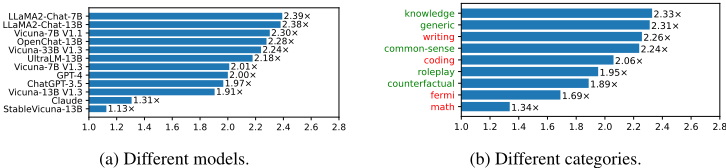
3.1.2 SPEED-UP BREAKDOWN: QUESTION CATEGORIES
在此我们研究 SoT 如何针对不同问题类别降低端到端延迟。图 2b 展示了所有模型上各问题类别的平均加速比。SoT 能够提供高质量答案的问题类别以绿色标出，其余类别以红色标出（答案质量评估参见 § 3.2.3）。可以看到，SoT 在所有问题类别上均能获得加速。对于 SoT 能够提供高质量答案的五个问题类别（即知识（knowledge）、通用（generic）、常识（common-sense）、角色扮演（roleplay）、反事实（counterfactual）），SoT 同时可将整体答案生成过程加速 1.89 × 至 2.33 ×。
3.2 EVALUATION OF ANSWER QUALITY
为了比较常规顺序生成（在下文讨论中简称为 "normal"）与 SoT 生成的答案质量，我们采用了两个基于大语言模型（LLM）的评估框架：FastChat（Zheng et al., 2023）和 LLMZoo（Chen et al., 2023c）。评估过程是将一个问题以及一对答案（来自 normal 生成或 SoT 生成）呈现给一个 LLM 评判者（主论文中使用 GPT-4；使用 ChatGPT-3.5 进行评估的结果见附录 I.4），并请其给出偏好。
以下是关于答案质量评估的更多细节：
在接下来的小节中，我们首先介绍 SoT 答案的总体质量（§ 3.2.1），然后深入探讨不同问题类别（§ 3.2.3）、模型（§ 3.2.2）和指标（§ 3.2.4）方面的细节。
3.2.1 OVERALL QUALITY
在图 3 中，我们使用来自 FastChat 和 LLMZoo 的两个衡量答案总体质量的指标，展示了在所有模型和问题上的胜/平/负率（即 SoT 相比 normal 生成获胜/打平/落败的案例所占百分比）。我们注意到，在 SoT 严格优于基线的情形上，这两个指标之间存在差异（45.8% 对比 29.5%）。尽管如此，两个指标一致表明，在大约 60% 的案例中 SoT 并不劣于基线，且胜率与负率接近。这一结果表明，SoT 的答案保持了与 normal 生成相当的良好质量。
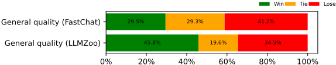
3.2.2 QUALITY BREAKDOWN: MODELS
我们在图 4 中计算了所有模型的净胜率。同样地，我们看到来自 FastChat 和 LLMZoo 的两个通用指标在绝对值上有所不同，但排名相似。具体而言，两个指标一致表明 OpenChat-13B、Vicuna-7B V1.1、Claude、LLaMA2-Chat-13B 的净胜率较低，而 Vicuna-13B V1.3、StableVicuna-13B 和 UltraLM-13B 的净胜率较高。
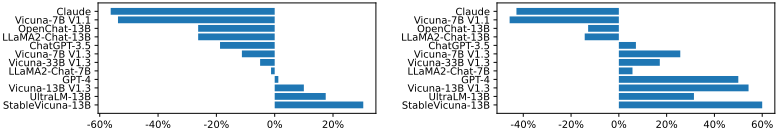
我们在附录 I.1.1 中对这些答案进行了研究，并将关键结论总结如下。一些模型的 SoT 净胜率较低，是因为它们无法很好地理解骨架和要点扩展提示。另一些模型的 SoT 净胜率较低，则是因为它们的 normal 答案本身已具有良好的质量，使得 SoT 难以胜过它们（例如 Claude）。对于能够理解 SoT 提示且 normal 答案不够好的模型，SoT 可以提升答案质量。我们预计，进一步改进 SoT 提示或对模型进行微调，可以让大语言模型（LLM）更容易理解骨架和要点扩展提示，并最终带来更好的答案质量。
3.2.3 QUALITY BREAKDOWN: QUESTION CATEGORIES
我们在图 5 中计算了所有问题类别上的净胜率。与图 3 类似，我们看到 LLMZoo 对 SoT 质量的评价往往比 FastChat 更为乐观。尽管如此，两者的结论是一致的：SoT 在通用、常识、知识、角色扮演和反事实类别上表现相对较好，而在写作、费米、数学和编程类别上表现相对较差。
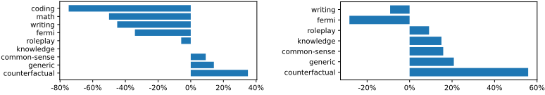
我们在附录 I.1.2 中对这些答案进行了研究，并将主要结论总结如下。当一个问题可以用若干要点来回答、且各要点的细节能够独立展开时，SoT 表现良好。这涵盖了大量现实世界中的问题。另一方面，对于需要逐步思考的问题——其中后续步骤需要依赖前面步骤的细节——例如数学问题，应用 SoT 从根本上说具有挑战性。为了让 SoT 能够泛化到更广泛的问题类别，一个有前景的途径是让 SoT 能够自适应地回退到 normal 生成，我们在 § 4 中对此进行了探索。有趣的是，我们的结果表明，一些 LLM 在没有特殊提示或调优的情况下，偶尔已经能够做到这一点（见附录 I.1.2）。
3.2.4 QUALITY BREAKDOWN: METRICS
在图 6 中，我们展示了来自 LLMZoo 的更详细指标，以揭示 SoT 在哪些方面能够提升或损害答案质量。平均而言，我们可以看到 SoT 提升了多样性和相关性，同时损害了沉浸感和连贯性。
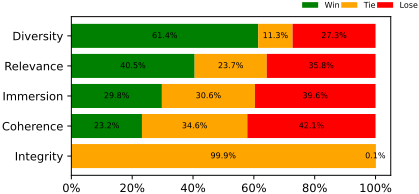
通过答案调查（附录 I.1.3），我们总结出以下关键要点。SoT 的骨架阶段明确要求 LLM 从多个方面讨论答案，且不使用填充词。这提升了答案的多样性和相关性。至于连贯性和沉浸感，SoT 在大约 60% 的情况下并不比 normal 生成差。一个未来的方向是改进 SoT 的提示或流水线，使答案在更多指标上表现更好。
4 SOT WITH ROUTER (SOT-R): ADAPATIVELY TRIGGERING SOT
在 § 3 中，我们看到 SoT 在保持（甚至提升）许多问题类型答案质量的同时，带来了可观的速度提升。然而，其最大的局限在于 SoT 不适用于需要逐步推理的问题（§ 3.2.3）。为推动 SoT 的实际应用，我们探索了仅在合适的情况下自适应触发 SoT 的可能性。为实现这一目标，我们提出了一个路由器（router）模块，由其决定是否应对用户请求应用 SoT，然后相应地调用 SoT 或 normal 解码。这一范式与近期通过组合多个模型来解决复杂任务的趋势相一致（Chase, 2022; Shen et al., 2023）。为实现该路由器，我们探索了两种方案：以 LLM 提示作为路由器（无需模型训练）（§ 4.1），以及以经过训练的 RoBERTa 作为路由器（§ 4.2）。评估结果见 § 4.3。
4.1 PROMPTING ROUTER
我们直接询问大语言模型（LLM）该问题是否适合应用 SoT。更具体地说，我们询问 LLM，期望的答案是否为一系列独立要点组成的列表（提示见附录 C.1）。如果答案是肯定的，我们就使用 SoT；否则，我们将使用常规生成（即直接将问题输入给 LLM）。鉴于其强大的能力，我们采用 GPT-4 作为 LLM 路由器。
4.2 TRAINED ROUTER
虽然使用 GPT-4 作为路由器免除了模型训练的需要，但其性能仍然对提示设计较为敏感。因此，我们将该问题视为一个序列分类任务，通过微调一个小型语言模型来充当路由器。具体而言，我们对 LIMA 数据集（Zhou et al., 2023）进行标注作为训练集，用于训练一个仅有 1.2 亿参数的 RoBERTa 模型（Liu et al., 2019）。关于标注和训练的详细信息可参见附录 C.2.1 和 C.2.2。
4.3 SOT-R EVALUATION
我们在第 3 节的相同评估设置下对 SoT 和 SoT-R 进行比较。除了基于提示的路由器和经过训练的路由器之外，我们还考虑了一种“人工路由器”，即由我们人工判断每个问题是否应当应用 SoT。这可作为比较的基准。
4.3.1 EVALUATION OF EFFICIENCY
图 7 展示了 SoT 和 SoT-R 在 Vicuna-80 上针对不同模型的加速比（WizardLM 数据集上的结果见附录 G.2）。我们可以看到：(1) 正如预期，SoT-R 获得的加速比低于 SoT，这是因为对于某些问题 SoT 不会被触发，并且路由器会引入少量延迟开销。尽管如此，SoT-R 仍能为大多数模型带来 > 1 × 的加速比。(2) 在 Vicuna-80 上，采用经过训练的路由器的 SoT-R 在 12 个模型中的 7 个上获得了略高的加速比；而在 WizardLM 上，采用基于提示的路由器的 SoT-R 在所有模型上都获得了更高的加速比（图 17）。
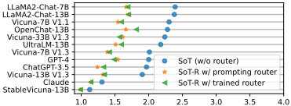
4.3.2 EVALUATION OF ANSWER QUALITY
Fig. 8 shows the net win rates (averaged across all models) of SoT and SoT-R on Vicuna-80 with the FastChat metrics (see App. I.2 for results of the WizardLM dataset and LLMZoo metrics). We can see that: (1) SoT-R significantly improves the answer quality on questions where SoT is not suitable (e.g., coding , math , writing , fermi ) by falling back to normal decoding. At the same time, SoT-R maintains answer quality improvements on questions where SoT is good at. (2) The trained router performs similar to (on Vicuna-80) or better than (on WizardLM; see App. I.2) the prompting router. This accords with our intuition in § 4.2. (3) The prompting and trained routers could even surpass human router (e.g., on roleplay questions; see more examples on WizardLM in App. I.2).
We discuss the consistency across three routers in App. C.3. The primary takeaways include: (1) on Vicuna-80, there is a notable consistency among all three routers, and (2) on WizardLM, greater discrepancies emerge, with the trained router showing higher alignment with human annotations.
5 SOT IN THE CONTEXT OF LITERATURE
本节将 SoT 置于相关工作的背景中进行定位，以揭示 SoT (1) 与其他方法有何关联、(2) 与其他方法有何不同，以及 (3) 如何借助其他方法的力量。扩展讨论见附录 D。
模型级与系统级的高效 LLM 方法。在模型层面，已有工作提出了高效架构，包括动态混合专家（dynamic mixture-of-experts）(Lepikhin et al., 2021)、低复杂度注意力 (Kitaev et al., 2020) 以及多查询注意力 (Shazeer, 2019)。然而，这些方法通常需要高昂的重新训练成本。相比之下，压缩方法通过降低预训练 LLM 的复杂度，只需较少的微调成本，例如量化 (Frantar et al., 2022) 以及权重或激活稀疏化 (Mishra et al., 2021; Zaheer et al., 2020)。
在系统层面，已有工作 (1) 优化计算图 (Dao et al., 2022)，(2) 优化计算图在设备上的分配与调度 (Sheng et al., 2023)，或 (3) 为服务多个用户设计批处理（batching）或缓存（caching）机制 (Fang et al., 2021)。这些技术应对的是庞大模型规模与注意力机制所带来的大量内存访问和内存占用问题，并且主要以提升吞吐量而非端到端延迟为目标。由于 SoT 以吞吐量换取端到端延迟，SoT 能够使这些面向吞吐量的技术有助于改善端到端延迟。这种有趣的协同效应为未来服务系统在延迟与吞吐量之间实现更优权衡提供了机会。
与模型级和系统级技术不同，SoT 是一种数据级技术，属于一种新的“面向效率的内容协同组织”（content co-organization for efficiency）范式。更多讨论见 § 6。
通过并行生成实现的高效 LLM 方法。一些已有工作也着手解决顺序解码问题。投机解码（Speculative Decoding, SD）方法 (Stern et al., 2018) 采用较小的模型顺序生成若干连续 token，再利用目标 LLM 对其进行并行验证。非自回归生成（Non-autoregressive Generation, NAG）方法 (Gu et al., 2018; Xiao et al., 2023) 并行地采样并精炼连续 token，通常需要经过修改和调优的模型的支持。
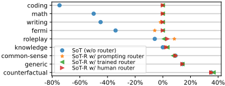
SD 和 NAG 方法依赖辅助模型或特殊模型与采样方案，对连续 token 进行并行验证或并行的采样与精炼。相比之下，SoT 利用 LLM 新近涌现的指令遵循与规划能力，提示 LLM 本身以允许不同片段中的 token 并行生成的方式来规划内容。
大语言模型（LLM）的提示方法。近年来，“预训练、提示、预测”范式应运而生，该范式在提升 LLM 数学推理与常识推理质量（Wei et al., 2022; Kojima et al., 2022; Wang et al., 2022; Chen et al., 2022）以及多模态任务规划（Shen et al., 2023; Zhu et al., 2023）方面展现出良好前景。SoT 并不聚焦于答案质量，而是首次尝试利用提示的力量来提升效率。
6 LIMITATIONS, FUTURE WORK, AND OPEN QUESTIONS
答案质量评估。由于所使用的提示集合有限、GPT-4 评判者可能存在的偏差，以及评估 LLM 生成内容本身固有的困难，我们的答案质量评估远非完善。目前我们尚未开展人工评估，这是因为 SoT 生成的答案具有独特模式，人类很容易据此判断某个答案是否由 SoT 生成，从而可能造成评估偏差。
激发或提升 LLM 的能力。§ 3.2.4 展示了 SoT 提升答案质量的潜力。这是近期研究中一个更广泛趋势的一部分，代表性工作包括思维链（CoT）(Kojima et al., 2022; Wei et al., 2022)、ToT（Yao et al., 2023）和 ReAct（Yao et al., 2022），这些工作共同印证了这样一个观点：以语言明确表达思维过程，能够从 LLM 中引出高质量答案。这些发现与人类思维颇为相似：我们并非仅仅依赖第一直觉或纯粹的顺序思考，而是常常记录逐步推理或思路组织，以获得高质量答案。这一有趣的相似性促使我们进一步探索如何借鉴人类思维过程，以促成更有效、更高效的 AI。
例如，SoT 目前忽略了各要点之间的依赖关系。一种在概念上更好的方式是将各要点组织为 Graph-of-Thoughts（思维图），其中边表示依赖关系，每个要点都在其祖先要点内容的条件下进行解码。此外，与其遵循静态图，我们预计需要动态的 Graph-of-Thoughts，即高层思维结构由 LLM 自身动态调整。这有望将 SoT 在效率与全局思考方面的优势，与 CoT（Kojima et al., 2022; Wei et al., 2022）等方法在逻辑推理与即兴思考方面的优势结合起来。值得注意的是，同期的一项工作（Besta et al., 2023）已尝试设计 Graph-of-Thoughts 来引出推理。此外，探索如何利用 SoT 的答案对 LLM 进行微调，使其以自我改进的方式生成更具结构性的答案（Zelikman et al., 2022; Huang et al., 2022），也是十分有趣的方向。
SoT 在不同场景下的效率与开销。服务系统通常采用批处理来处理并发查询。这引发了一个担忧：SoT 是否会因并行请求而损害服务吞吐量。（1）当并发查询数量未饱和时，SoT 能够有效降低延迟并提升 GPU 利用率。示例场景包括：（a）单用户的边缘侧应用；（b）在用户请求未饱和、计算能力未被充分利用的时段内的集中式服务。基于系统工作负载研究合适的 SoT 触发条件是一个有趣的问题。（2）当并发查询数量饱和时，SoT 对于提升答案质量仍然有用。然而，在这种情况下，需要重点考虑 SoT 带来的计算开销。我们在附录 H 中深入探讨了这一问题。
对于基于 API 的模型，预填充（prefilling）token 数量的增加引发了一个值得注意的问题（附录 H）。鉴于许多 API 按 token 用量收费，SoT 可能导致更高的成本。为解决这一问题，可以使用提示调优（prompt tuning）来设计更短的 SoT 提示（Jiang et al., 2023）。
以数据为中心的效率优化。尽管以数据为中心的工程方法在提升答案质量方面（Zha et al., 2023; HazyResearch, 2023）正日益流行，但其在推理效率方面的潜力尚未被探索。SoT 是首次尝试。随着 LLM 能力和 LLM 生成数据量的快速增长，以数据为中心的技术在未来可能会变得更加有用。为铺平通往这一目标的道路，还有许多值得探索之处。例如，SoT 的加速比取决于 SoT 提示、模型和问题本身，因此不如模型级或系统级技术那样可预测、可控制，这可能会阻碍其实际应用。我们期待未来的工作能够充分释放以数据为中心的效率优化的全部潜力。
Table of Contents
| A | Model Details | Model Details | 18 |
|---|---|---|---|
| B | Implementation Details of Skeleton-of-Thought | Implementation Details of Skeleton-of-Thought | 18 |
| B.1 | Prompt . . . . . . . . . . . . . . . . . . . . . . . . . . . | . . . . . . . . . . . . 18 | |
| B.2 | Supporting Multi-Round Conversation . . . . . . . . . . | . . . . . . . . . . . . 20 | |
| C | Implementation Details of Skeleton-of-Thought with Router | Implementation Details of Skeleton-of-Thought with Router | 20 |
| C.1 | Prompting Router . . . . . . . . . . . . . . . . . . . . . | . . . . . . . . . . . . 20 | |
| C.2 | Trained Router . . . . . . . . . . . . . . . . . . . . . . . | . . . . . . . . . . . . 20 | |
| C.3 | Router Consistency . . . . . . . . . . . . . . . . . . . . | . . . . . . . . . . . . 21 | |
| C.4 | Concurrent execution for SoT-R . . . . . . . . . . . . . . | . . . . . . . . . . . . 21 | |
| D | SoT In the Context of Literature (Expanded) | SoT In the Context of Literature (Expanded) | 22 |
| D.1 | Efficient LLMs . . . . . . . . . . . . . . . . . . . . . . | . . . . . . . . . . . . 22 | |
| D.2 | Prompting Methods for LLMs . . . . . . . . . . . . . . . | . . . . . . . . . . . . 23 | |
| D.3 | Hierarchical Text Generation . . . . . . . . . . . . . . . | . . . . . . . . . . . . 24 | |
| E | Efficiency Analysis | Efficiency Analysis | 24 |
| F | Efficiency Profiling | Efficiency Profiling | 26 |
| G | Efficiency Evaluation | Efficiency Evaluation | 27 |
| G.1 | Skeleton-of-Thought . . . . . . . . . . . . . . . . . . . . | . . . . . . . . . . . . 27 | |
| G.2 | Skeleton-of-Thought with Router . . . . . . . . . . . . . | . . . . . . . . . . . . 29 | |
| H | Overhead of SoT in Different Scenarios | Overhead of SoT in Different Scenarios | 31 |
| I | Answer Quality Evaluation | Answer Quality Evaluation | 32 |
| I.1 | Skeleton-of-Thought . . . . . . . . . . . . . . . . . . . . | . . . . . . . . . . . . 32 | |
| I.2 | Skeleton-of-Thought with Router . . . . . . . . . . . . . | . . . . . . . . . . . . 44 | |
| I.3 | Quality Comparison with Longer Normal Answer . . . . | . . . . . . . . . . . . 46 | |
| I.4 | ChatGPT-3.5 as the Judge . . . . . . . . . . . . . . . . . | . . . . . . . . . . . . 46 | |
| J | Combining SoT-R with Model Quantization | Combining SoT-R with Model Quantization | 48 |
| J.1 | Speed-ups of SoT + Quantization on Quantized Models . | . . . . . . . . . . . . 49 | |
| J.2 | Speed-ups of SoT + Quantization on Unquantized Models | . . . . . . . . . . . . 49 | |
| K | Additional SoT-R statistics | Additional SoT-R statistics | 50 |
| K.1 | Number of Suitable Questions . . . . . . . . . . . . . . . | . . . . . . . . . . . . 50 | |
| K.2 | Peak Memory Overhead . . . . . . . . . . . . . . . . . . | . . . . . . . . . . . . 50 | |
| K.3 | Speed-ups with Different Number of Points . . . . . . . . | . . . . . . . . . . . . 51 | |
| L | Notes on Application Scenarios | Notes on Application Scenarios | 51 |
| A | Model Details | Model Details | 18 |
17
A MODEL DETAILS
表 1 总结了我们用于评估 SoT 的模型。在主论文中我们使用 GPT-4，在附录 I.4 中使用 ChatGPT-3.5，作为 FastChat 和 LLMZoo 评估中的评判者。
| Access | Model Name | Institution | Released Date |
|---|---|---|---|
| Open-Source | LLaMA2-Chat-7B (Touvron et al., 2023b) LLaMA2-Chat-13B (Touvron et al., 2023b) OpenChat-13B (Wang et al., 2023a) Vicuna-7B V1.3 (Chiang et al., 2023) Vicuna-13B V1.3 (Chiang et al., 2023) Vicuna-33B V1.3 (Chiang et al., 2023) StableVicuna-13B (Phung, 2023) UltraLM-13B (Ding et al., 2023) Vicuna-7B V1.1 (Chiang et al., 2023) | Meta &Microsoft Meta &Microsoft Tsinghua LMSYS LMSYS LMSYS CarperAI OpenBMB &Tsinghua LMSYS | 2023/07 2023/07 2023/07 2023/06 2023/06 2023/06 2023/05 2023/05 2023/03 |
| API-Based | Claude (Anthropic, 2023) ChatGPT-3.5 GPT-4 | Anthropic OpenAI OpenAI | 2023/05 2022/11 2023/03 |
| Access | Model Name | Institution | Released Date |
| Access | Model Name | Hugging Face or API Endpoints |
|---|---|---|
| Open-Source | LLaMA2-Chat-7B (Touvron et al., 2023b) LLaMA2-Chat-13B (Touvron et al., 2023b) OpenChat-13B (Wang et al., 2023a) Vicuna-7B V1.3 (Chiang et al., 2023) Vicuna-13B V1.3 (Chiang et al., 2023) Vicuna-33B V1.3 (Chiang et al., 2023) StableVicuna-13B (Phung, 2023) UltraLM-13B (Ding et al., 2023) Vicuna-7B V1.1 (Chiang et al., 2023) | meta-llama/Llama-2-7b-chat-hf meta-llama/Llama-2-13b-chat-hf openchat/openchat lmsys/vicuna-7b-v1.3 lmsys/vicuna-13b-v1.3 lmsys/vicuna-33b-v1.3 CarperAI/stable-vicuna-13b-delta 2 openbmb/UltraLM-13b 2 lmsys/vicuna-7b-delta-v1.1 |
| API-Based | Claude (Anthropic, 2023) ChatGPT-3.5 GPT-4 | Claude extension on Slack 3 Azure OpenAI, gpt-35-turbo 0301 version 4 OpenAI, gpt-4-0613 version |
| Access | Model Name | Hugging Face or API Endpoints |
B.1 PROMPT
The skeleton prompt is shown in Prompts 1 and 3 and the point-expanding prompt is shown in Prompt 2.
Skeleton prompt template. In order to make the output skeleton short and in a consistent format for the good of efficiency and ease of point extraction, the skeleton prompt template (1) describes the
2 For convenience, we use the non-official endpoint TheBloke/stable-vicuna-13B-HF and TheBloke/UltraLM-13B-fp16 to get merged weights.
3 https://www.anthropic.com/claude-in-slack
4 https://azure.microsoft.com/en-us/products/ai-services/openai-service
18
Prompt 3. Skeleton Prompt Template T s (with Two-Shot Demonstrations)
Prompt 4. LLM Prompting as the Router
[User:] 问题：{ question }
你希望如何回答这个问题？
A. 将答案组织为要点或观点的列表（格式为 1.、2.、3. 等），并且这些要点或观点可以独立回答，无需参照前面要点的内容。
B. 将答案组织为要点或观点的列表（格式为 1.、2.、3. 等），并且后面的要点或观点无法在不参照前面内容的情况下独立回答。
C. 不要将答案组织为要点或观点的列表。
只需说出 A、B 或 C。不要解释。不要提供该问题的答案。
从所提供的部分答案继续生成文本。然而，在某些罕见情况下，ChatGPT-3.5 会重复所提供的部分答案。
对于 Slack 上的 Claude，没有明显的方法可以向 API 提供部分答案。我们只好对提示模板稍作修改，在末尾添加：
请从 ' { partial answer } ' 开始你的回答，在此之前不要输出其他内容
我们发现 Claude 能够很好地理解并遵守这一指令。对于 GPT-4，我们也采用这种方法。
系统消息。对于开源模型，除 LLaMA2 外，我们在提示中不包含系统消息。
部分答案、'**very shortly**' 以及上文讨论的 2-shot 示例，是我们在所有模型和所有评估中所使用的提示之间仅有的差异。
B.2 SUPPORTING MULTI-ROUND CONVERSATION
要在多轮对话中使用 SoT，我们只需将问题和最终聚合后的答案放入对话历史中，并移除所有 SoT 提示。这样，在某一轮对话中使用 SoT 就不会在后续轮次中引入额外的预填充（prefill）成本。
C.1 PROMPTING ROUTER
我们使用 Prompt 4 来查询 GPT-4 作为路由器。如果答案是 'A'（即该问题可以用一组相互独立的要点来回答），我们将使用 SoT。否则，如果答案是 'B'（即答案以一组要点的形式呈现，但各要点之间相互依赖）或 'C'（即答案不应以要点列表的形式呈现），则 SoT 不适用，我们将回退到常规解码。
C.2 TRAINED ROUTER
我们将路由问题视为一个序列分类任务。我们首先对 LIMA 训练集（Zhou et al., 2023）进行标注，然后使用标注好的数据对 RoBERTa 模型（Liu et al., 2019）进行微调。最后，我们将微调后的 RoBERTa 作为路由器应用于 Vicuna-80 和 WizardLM。我们将在下文详细介绍各个步骤。
C.2.1 ANNOTATION PROCESS
在该分类任务中，标签 1（正例）表示该问题可以用 SoT 来回答，而标签 0（负例）则表明使用常规生成模式更为合适。我们对 LIMA 训练集进行标注，该训练集由 1,030 个问答对组成，来源于三个社区网页：Stack Exchange、wikiHow 和 Pushshift Reddit。我们还对 Vicuna-80 和 WizardLM 数据集进行了标注，用于评估。
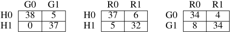
| G0 | G1 | R0 | R1 | R0 | R1 | |||
|---|---|---|---|---|---|---|---|---|
| H0 | 94 | 66 | H0 | 135 | 25 | G0 | 93 | 4 |
| H1 | 3 | 55 | H1 | 31 | 27 | G1 | 73 | 48 |
| G0 | | G1 | | R0 | R1 | | R0 | R1 |
我们使用 GPT-4 来辅助标注过程。具体而言，我们将每个问题呈现给 GPT-4，并分析其回答，以判断该问题是否可以触发 SoT。如果 GPT-4 的回答满足以下两个标准，我们就为该问题分配正例标签：（1）回答中包含一个可以并行展开的要点列表；（2）每个要点都提供了足够的细节（即展开要点的回答不会太短），这将使 SoT 能够实现加速。论文的两位作者独立进行标注，并就不一致的标注进行讨论，以确定最终标签。
C.2.2 TRAINING DETAILS
我们使用具有 120M 参数的 roberta-base 作为路由器模型。微调采用 AdamW 优化器（Loshchilov & Hutter, 2019）进行，权重衰减（weight decay）设为 0.01。学习率在最初 1% 的迭代中经历预热（warm-up）阶段，升至 5e-5，随后线性衰减。我们以 32 的批量大小（batch size）训练模型 2 个轮次（epoch）。输入序列经过填充或截断，以达到一致的 512 个 token 的长度。
在 SoT 的应用中，假阳性（即在不应该触发 SoT 时错误地触发了 SoT，导致回答质量下降）比假阴性（即路由器漏掉了潜在的 SoT 触发机会，导致加速比降低）更值得关注。因此，为了减少假阳性，我们采用 Tversky 损失（Wang et al., 2023b），其参数为 α = 0.7 和 β = 0.3，该损失对假阳性的惩罚重于对假阴性的惩罚。我们还引入了标签平滑（label smoothing）（Szegedy et al., 2016），平滑因子为 ϵ = 0.2。总体而言，整个微调过程非常高效，在 NVIDIA A100 GPU 上仅需 2 分钟即可完成。
C.3 ROUTER CONSISTENCY
我们给出三个路由器的混淆矩阵，以说明它们之间的一致性。在 Vicuna-80 和 WizardLM 上的结果分别如表 3 和表 4 所示。
在 Vicuna-80 上，我们可以观察到三个路由器之间具有相当程度的一致性。与基于 GPT-4 提示的路由器相比，经过训练的路由器相对于人工标注表现出略多的假阴性。相反，在 WizardLM 上，由于答案结构复杂且存在许多模糊情形，各路由器之间表现出显著差异。具体而言，GPT-4 路由器产生了大量假阳性，这对答案质量造成了不利影响（参见附录 I.2）。RoBERTa 路由器则与人工标注更为接近。
C.4 CONCURRENT EXECUTION FOR SOT-R
在 SoT-R 中，路由器作为一个额外的阶段，扩展了两阶段的 SoT 流水线，如图 9 所示。为了将延迟优化的极限进一步推进，我们可以并发地运行路由器、常规生成和 SoT 生成。一旦路由器做出决策，常规生成和 SoT 生成两个过程之一即可被中止。然而，这种方法会增加 token 开销。因此，我们在本工作中并未采用这种方法，而是将其留作未来工作。
21
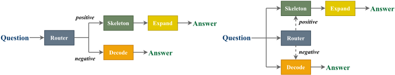
D.1 EFFICIENT LLMS
大量研究致力于提升大语言模型（LLM）推理的吞吐量和延迟。我们首先讨论模型级的架构设计或压缩技术。这些技术会改变模型本身，能够同时改善延迟和吞吐量，但需要通过微调来保持模型质量。随后，我们讨论系统层面的工作，这类工作对计算图本身进行优化，或优化计算图在计算与存储设备上的分配与调度。大多数系统层面的工作都在加速预填充（prefilling）阶段，或专注于提升吞吐量。最后，我们讨论一些与我们的动机相近的研究工作，即解决顺序解码（sequential decoding）的效率问题。
模型级优化。目前已涌现出大量架构设计方面的工作，旨在：(1) 通过引入混合专家（mixture-of-expert）推理来提升相对于模型规模的可扩展性（Lepikhin et al., 2021; Fedus et al., 2022）；(2) 通过设计新的注意力机制来应对注意力相对于输入规模的二次复杂度（Kitaev et al., 2020; Wang et al., 2020）；(3) 通过使用多查询注意力（multi-query attention）来减少注意力的内存访问量和内存占用（Shazeer, 2019），等等。然而，这些方法通常需要高昂的重新训练成本。模型压缩技术则通过从某些方面降低预训练 LLM 的模型复杂度，从而只需较少量的微调（Ganesh et al., 2021）。代表性技术包括量化（Xiao et al., 2022; Frantar et al., 2022; Lin et al., 2023）、对权重、激活和注意力的静态或动态剪枝（Mishra et al., 2021; Zaheer et al., 2020; Wang et al., 2021; Chen et al., 2023b），等等。
将视野从 LLM 压缩扩展到整个模型压缩领域，我们可以看到，面向效率的模型协同设计或压缩在过去几年中受到了极大的关注，并已发展为若干庞大的研究领域，例如剪枝（Han et al., 2015; Wen et al., 2016）、量化（Krishnamoorthi, 2018）、分解（Denton et al., 2014）以及神经架构搜索（Zoph & Le, 2017; Elsken et al., 2019; Cai et al., 2019）。与模型协同设计范式不同，SoT 属于一种“面向效率的内容协同组织”（content co-organization for efficiency）范式，用于提升 LLM 的效率。随着 LLM 能力以及 LLM 生成数据量的不断增长，数据层面的技术有望成为高效 LLM 工具箱中的重要工具。
系统级优化。在无损加速领域，大量工作致力于解决大语言模型（LLM）在现代硬件平台上的 I/O 受限特性（Dao et al., 2022）。众多研究（Dao et al., 2022; Zhai et al., 2022; Ivanov et al., 2021; NVIDIA, 2019）专注于通过以 I/O 友好的方式融合并实现各种操作来调整计算图。作为一种代表性方法，FlashAttention（Dao et al., 2022）将一次注意力计算中的所有操作融合为一个 GPU 核函数，并采用空间分块计算，以减少注意力图的片外 I/O。尽管 FlashAttention 能够有效加速训练以及推理的预填充（prefilling）阶段，但它对解码阶段的加速作用有限（当批大小较小时），因为制约解码阶段的是权重的 I/O，而非激活值或注意力图的 I/O。例如，当上下文长度为 64 时，使用 LLaMA-7B 解码一个 token 需要将 7B 个参数中的每一个从片外高带宽存储器（HBM）至少加载到 GPU 芯片一次，而只需在片外 HBM 与 GPU 芯片之间传输约 20M（0.02B）个激活值。
为了满足服务级别目标（Service Level Objectives），服务系统专注于在延迟约束下提升服务吞吐量。为此，服务系统（Fang et al., 2021; NVIDIA,
22
2021; Google, 2021）将多个查询打包成一个批次，以提高硬件利用率。实践证明，批处理技术在提升吞吐量方面非常有效，并由此发展出多种变体。例如，一些工作设计了用于决定将哪些查询打包在一起的方法（Fang et al., 2021; Zhou et al., 2022），另一些工作则选择性地对模型的部分进行批处理，以实现细粒度的迭代级批处理（Yu et al., 2022）或多任务批处理（Zhou et al., 2022）。人们还提出了各种模型并行（Lu et al., 2017; Huang et al., 2019; Narayanan et al., 2019; Rajbhandari et al., 2020; Narayanan et al., 2021; Li et al., 2021; Zheng et al., 2022）与卸载（offloading）（Ren et al., 2021; Sheng et al., 2023）技术，以最大化 LLM 训练或推理的吞吐量。简而言之，在给定计算图和设备配置的情况下，这些技术对计算、存储和通信在设备上的切分、分配与调度进行优化。除模型并行和批处理技术之外，面向 LLM 工作负载的高效内存管理机制也是服务系统中一项必不可少的特性（Kwon et al., 2023; SenseTime, 2023a;b）。
总而言之，这些系统级技术主要有助于提升训练和批量推理中的吞吐量。SoT 可以利用这些技术来提升对多个片段进行批量解码的吞吐量。这意味着 SoT 能够发挥这些面向吞吐量技术的威力，使其有助于改善端到端延迟，为未来服务系统中更好地权衡延迟与吞吐量提供了一个新的维度。
从另一个并行化视角来定位 SoT：SoT 引导 LLM 将顺序工作负载调整为“内容间”（inter-content）可并行的形式，这不同于现有服务系统中的并行层级，包括实例间（inter-instance）(Krizhevsky, 2014; Rajbhandari et al., 2020)、操作间（inter-operation）(Huang et al., 2019; Narayanan et al., 2019; 2021)、操作内（intra-operation）(Xu et al., 2021) 以及 token 间（inter-token）(Li et al., 2021)。探索将 SoT 集成到服务系统中以最大化硬件利用率，可能是值得的。
解码优化。端到端延迟的一个瓶颈在于自回归解码阶段，在该阶段中 token 必须逐个生成。由于 token 之间存在依赖关系，不同 token 的计算无法并行化，导致 GPU 利用率严重不足。为了改善给定 LLM 的端到端解码延迟，投机解码（speculative decoding）方法 (Stern et al., 2018; Leviathan et al., 2022; Chen et al., 2023a; Gante, 2023; Sun et al., 2023; Miao et al., 2023) 提出使用更廉价的方法来生成较短的候选 token 序列，例如使用一个远小于给定 LLM 的辅助模型进行顺序解码。然后，这些方法使用 LLM 并行验证候选序列，并保留与 LLM 验证结果相匹配的前缀序列。
另一类以解决自回归效率问题为动机的工作是非自回归生成（non-autoregressive generation, NAG）方法 (Gu et al., 2018; Xiao et al., 2023)。NAG 方法并行地采样连续的 token，通常借助经过修改和调优的模型。为了保持答案质量，许多 NAG 方法并非只进行一次迭代的采样，而是并行地对输出进行多轮迭代精炼 (Xiao et al., 2023; Santilli et al., 2023)。
总而言之，投机解码方法使用辅助模型让 LLM 对连续 token 进行并行验证，而 NAG 方法则依赖专门设计的模型、训练方案或采样方案来实现连续 token 的并行采样与精炼。相比之下，SoT 通过提示让 LLM 本身以一种允许不同片段中的多个 token 并行生成的方式来规划内容。SoT 利用的是 SoTA LLM 新涌现的指令遵循与规划能力，而非依赖专门设计的建模、采样和训练方案。这与所有针对自回归效率问题的现有工作都不同。
D.2 PROMPTING METHODS FOR LLMS
近年来，“预训练、提示、预测”（pre-train, prompt, and predict）范式应运而生（Liu et al., 2023），该范式通过设计由任务描述和（可选的）少量示例组成的提示，引导预训练大语言模型（LLM）为广泛的下游任务生成答案。研究人员发现，经过指令微调的 LLM（Brown et al., 2020; Wei et al., 2021; Ouyang et al., 2022; Chung et al., 2022; Taori et al., 2023）具备很强的能力：（1）得益于指令微调过程中接触到的多样化自然语言描述，能够泛化到新任务；（2）能够仅凭少量示例进行上下文学习（in-context learning），而无需调整权重。
23
凭借这些能力，该领域一直在通过人工设计（Brown et al., 2020; Kojima et al., 2022; Shen et al., 2023; Li et al., 2023a）、自动搜索（Shin et al., 2020）或持续调优（Li & Liang, 2021; Lester et al., 2021）提示，来发掘 LLM 在下游任务上的能力。目前已有一大批提示方法，通过设计模仿人类推理的思考流程来提升 LLM 的推理性能：（1）模仿逐步式或组合式的思考结构（Wei et al., 2022; Kojima et al., 2022; Press et al., 2022; Yao et al., 2023; Besta et al., 2023; Zhang et al., 2023）；（2）设计多条推理路径及其聚合方式（Wang et al., 2022; Yao et al., 2023; Li et al., 2023c）；（3）调用工具进行计算与信息检索（Chen et al., 2022; Yao et al., 2022; Schick et al., 2023）。作为一个代表性例子，思维链（Chain-of-Thought, CoT）提示仅需提供"Let's think step by step"（Kojima et al., 2022）这样的指令或少量示例（Wei et al., 2022），就能大幅提升需要逻辑推理的任务上的性能。另一个引发极大关注的话题是提示 LLM 协助完成复杂的多模态任务（Shen et al., 2023; Zhu et al., 2023）。例如，HuggingGPT（Shen et al., 2023）设计了提示来引导 LLM 生成结构化 JSON，以编排多个模型的执行，从而完成复杂任务。
总而言之，关于提示方法的大量文献一直致力于发掘 LLM 的不同能力，并提升其在不同下游任务上的答案质量。相比之下，SoT 则是首次尝试利用提示的力量来提升效率。
D.3 HIERARCHICAL TEXT GENERATION
SoT 可以被视为是“分层”的，因为它具有高层次的答案结构规划。分层文本生成领域的先前研究（Li et al., 2015; Shao et al., 2019; Puduppully et al., 2019; Fan et al., 2018）均聚焦于提升答案质量，包括改善长程连贯性、与主题的相关性，或减少冗余。这些方法构建了包含不同模块的分层神经架构，以建模高层次（句子级或文档级）与低层次（词级）的依赖关系（Li et al., 2015; Shao et al., 2019; Fan et al., 2018）。它们仍然采用逐词的顺序生成方式，句子之间没有并行化。
需要注意的是，先前工作（Li et al., 2015; Shao et al., 2019）中的句子级表示是“隐式”的潜在变量，而非“显式”的语言描述。一些先前研究（Shao et al., 2019; Puduppully et al., 2019）训练专门的规划模块来提前执行显式的内容规划。尽管如此，这些方法进行的都是“封闭式”规划，即仅对输入的关键词进行重排和分组，而不是就“说什么”和“怎么说”生成“自由形式”的规划。所有这些分层架构和规划模块都需要训练，甚至需要特殊的数据处理（Puduppully et al., 2019）。
总而言之，在目标方面，SoT 的主要关注点——高效生成——与先前的分层文本生成文献有所不同。在方法方面，SoT 并没有设计新的分层架构或规划模块，而是利用 LLM 新兴的规划能力和指令遵循能力，来进行显式（即规划由可解释的语言来描述）且自由形式的规划。这使得 SoT 能够应用于现成的 LLM 来生成结构化答案。
由于分层文本生成文献聚焦于提升答案质量，这些研究可以为 SoT 未来的扩展提供启发，使其能够为更广泛类型的问题生成高质量答案。
E EFFICIENCY ANALYSIS
本节详细解释了为什么 SoT 能够在相同计算资源下降低本地模型的整体解码延迟。
原始方法（vanilla approach）一次只处理一个问题并按顺序解码答案，而 SoT 则以批处理方式处理多个点扩展（point-expanding）请求及答案。我们关注以下问题：“与仅处理一个序列相比，处理一批序列会带来多少峰值内存开销和延迟增加？”
24
| Model | Prefill/Decode Latency (ms) | Prefill/Decode GPU Perf. (TFLOPS) |
|---|---|---|
| LLaMA-7B | 40 / 2735 | 43 / 0.31 |
| LLaMA-13B | 54 / 3725 | 62 / 0.44 |
| LLaMA-33B | 100 / 5506 | 85 / 0.75 |
| Model | Prefill/Decode Latency (ms) | Prefill/Decode GPU Perf. (TFLOPS) |
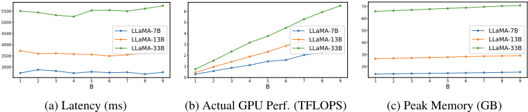
典型的 LLM 生成过程由两个阶段组成：（1）预填充（prefilling）阶段，在此阶段解析提示（prompt）以生成键值缓存（key-value cache）供后续使用；（2）解码阶段，在此阶段以顺序方式逐个生成词元（token）。解码阶段占据了端到端延迟的大部分，尤其是在生成长回复时。如表 5 所示，在 NVIDIA A100-80G 上运行 Vicuna-7B 时，解码阶段的实际计算性能仅为 0.31 TFLOPS（0.1% 利用率），而预填充阶段为 43 TFLOPS（13.8% 利用率）。利用率是相对于 FP16 5 张量核心（tensor core）峰值性能计算的——NVIDIA-A100 为 312 TFLOPS。因此，仅解码一个词元的延迟与预填充 128 个词元的延迟（40ms）相当。实际计算性能以及由此导致的延迟之所以存在如此巨大的差距，是因为仅仅解码一个词元就需要将所有 LLM 权重至少加载到 GPU 芯片上一次，因此解码严重受限于权重的 I/O，GPU 计算单元无法得到充分利用。
在进行批量解码时，随着序列批大小 B 的增加，每个序列解码一个词元的延迟大致保持不变（图 10a），因为需要加载到芯片上的 LLM 权重数量并未改变。因此，GPU 计算利用率 ( Actual GPU Performance Peak GPU Performance ) 随 B 的增加几乎呈线性增长（图 10b）。换言之，对于生成长度为 N 的最终答案，如果我们将答案切分为 B 个长度为 N/B 的片段并作为一个批次进行解码，相比顺序解码我们可以获得 B × 的解码加速。然而，在实际中，由于预填充较长的请求会带来一些开销，且 B 个片段的长度可能不均衡，批量点扩展阶段相比原始的预填充与顺序解码过程的实际加速会小于 B。
至于峰值内存开销，只要预填充（prefilling）的 token 长度不太大，LLM 权重的数量就可以比所有中间激活的数量大一到两个数量级，更不用说在推理期间大多数激活无需为反向传播而保存。因此，在我们的测试用例中，LLM 权重占据了内存占用（memory footprint）的大部分。因而，如图 10c 所示，随着批大小（batch size）B 的增大，由 KV 缓存和激活尺寸增大所带来的峰值内存开销增长缓慢。得益于较小的峰值内存开销，在我们所有的实验中，我们都成功地仅使用一块 GPU 来运行 SoT，而无需借助其他峰值内存优化技术（例如量化（Frantar et al., 2022; Lin et al., 2023）、卸载（Sheng et al., 2023））。
5 我们所有的实验均在 FP16 推理下运行。
25
F EFFICIENCY PROFILING
我们在目标 GPU（NVIDIA A100-80G 和 NVIDIA RTX 3090）上进行剖析，环境为 CUDA 11.7，使用 Hugging Face transformer 库 4.28.1 和 PyTorch 2.0.1。A100-80G 的主机配备 Intel Xeon Platinum 8358P CPU 和 1T 内存。RTX 3090 的主机配备 Intel Xeon Gold 6246R CPU 和 512G 内存。
延迟剖析与估计。对于解码阶段，我们将 t D B ( k ) 记为以批大小 B 批量解码第 k + 1 个 token 的延迟，其中上标 D 代表"decode"（解码）。对于每个批大小 B = 1 , · · · , 16 和每个上下文长度 k = 1 , · · · , 1024 ，我们使用 torch.cuda.Event 来记录解码一个 token 的延迟。我们将每次解码连续运行三次，并取其几何平均作为 { t D B ( k ) } k =1 , ··· , 1024; B =1 , ··· , 16 。对于预填充阶段，我们剖析以批大小 B = 1 , · · · , 16 对 token 长度在 range (1 , 700 , 10) 内的输入进行批量预填充的延迟，并将其记为 t P B ( k ) ，其中上标 P 代表"prefill"（预填充）。我们将每次测试连续运行七次，把前两次视为预热测试，并取后五次的几何平均作为 { t P B ( k ) } k =1 , 11 , ··· , 691; B =1 , ··· , 16 。在得到延迟剖析表后，给定一个包含 l i 个 token 的请求以及解码批大小 B ，生成 l o 个 token 的延迟可估计为：
其中下标 i 和 o 分别代表"input"（输入）和"output"（输出）。注意，为了快速剖析，我们仅每十个 token 长度（即 1 , 11 , 21 , · · · ）测试一次预填充延迟，并通过 t P B ( ⌊ l i 10 ⌋ × 10 + 1) 来估计 ˜ t P B ( l i ) 。
SoT 的解码过程由两个阶段组成：骨架阶段和要点扩展阶段。将骨架请求和骨架响应的 token 长度记为 l s i 和 l s o ，将最长的要点扩展请求和最长的要点扩展响应的 token 长度记为 l pe i 和 l pe o ，将要点数量记为 B ，我们可以将骨架阶段和要点扩展阶段的延迟计算为：
利用延迟剖析表，我们可以进一步估计以预填充长度 l i 解码 l o 个 token 时的平均 GPU 计算性能（以 FLOPS 计，即每秒 FLOPs 数）为
其中 f D B ( k ) 表示在上下文长度为 k 时解码一个 token 的 FLOPs，该值由 DeepSpeed 的 FLOPs 剖析器 6 计算得出。图 10b 报告了解码 64 个 token（预填充长度=128）过程中的平均 GPU 计算性能，即 P D (128 , 64 , B ) 。
内存剖析与评估。为了评估峰值内存，我们使用 torch.cuda.max_memory_allocated 来记录对不同长度序列进行预填充（prefilling）的内存消耗，以及在不同上下文长度、批量大小（batch size）为 1 至 16 的条件下进行解码的内存消耗。然后，我们将每个阶段的峰值内存计算为预填充阶段和解码阶段的最大值，并将 SoT 的整体峰值内存计算为骨架阶段和要点扩展阶段的最大值。
6 https://deepspeed.readthedocs.io/en/latest/flops-profiler.html
26
G.1 SKELETON-OF-THOUGHT
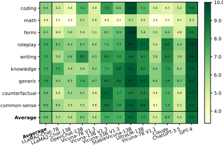
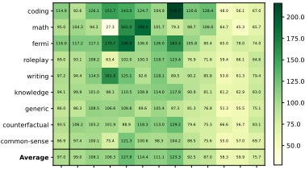
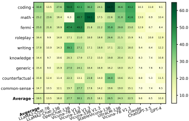
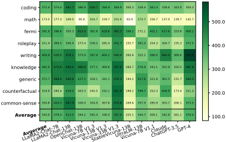
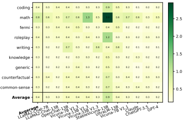
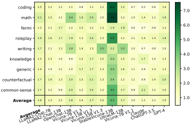
G.1.2 LATENCY BREAKDOWN: SOT STAGES AND PHASES
图 12 展示了在 Vicuna-80 上正常生成与 SoT 生成的绝对延迟。同样，SoT 相比正常生成的加速效果十分明显。可以看出，解码阶段在端到端延迟中占主导地位。因此，尽管 SoT 在骨架阶段的预填充（prefilling）延迟高于正常生成，并引入了额外的点扩展（point-expanding）预填充延迟——这是预期之中的——但这对于整体延迟乃至整体加速比的影响可以忽略不计。
27
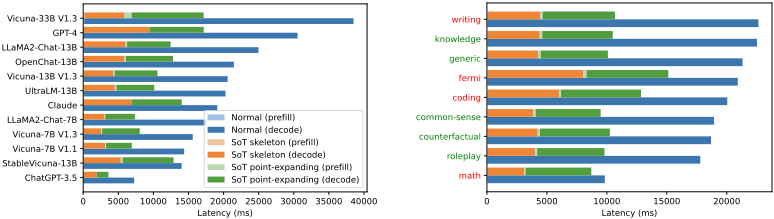
G.1.3 EFFICIENCY EVALUATION ON NVIDIA RTX 3090
我们在图 13 中展示了 SoT 在 RTX 3090 上的加速比与延迟分解。我们测试了三个 7B 模型，因为它们的 FP16 精度版本可以在一块 RTX 3090 GPU 上运行，而无需进一步采用诸如权重量化（weight quantization）（Frantar et al., 2022; Lin et al., 2023）或卸载（offloading）（Sheng et al., 2023）等峰值内存优化技术。在这三个模型上，SoT 在 Vicuna-80 上平均可获得 1.94 × 至 2.40 × 的加速。
对于 SoT 能够提供高质量答案的五个问题类别（即知识（knowledge）、常识（commonsense）、通用（generic）、角色扮演（roleplay）、反事实（counterfactual）），SoT 同时可将整体答案生成过程加速 1.96 × 至 2.52 ×。需要注意的是，对于数学（math）类别，尽管按三个数学问题分别计算加速比后得到的平均加速比为 1.20 ×，但 SoT 并未降低处理这三个问题的绝对延迟。
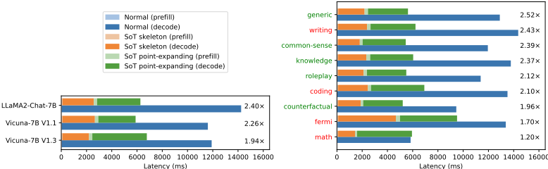
G.1.4 ACTUAL LATENCY TESTING
本节报告了在单块 NVIDIA A100 GPU 上，通过批量测试（而非基于预先制作的性能分析表进行分析）测得的 SoT 在 Vicuna-80 上的实际加速比。我们使用这 9 个开源模型测试了 SoT 与常规解码的实际端到端延迟。对于每个模型，我们将加速比测试运行五次，并在图 14 中绘制出箱线图。
28
如图 14a 所示，当前的 SoT 方案在 9 个开源模型中的 6 个上获得了大于 2 × 的加速比（即 Vicuna-7B V1.1、Vicuna-7B V1.3、UltraLM-13B、LLaMA2-Chat-7B、Vicuna-13B V1.3 和 LLaMA2-Chat-13B），并在 OpenChat-13B 和 Vicuna-33B V1.3 上获得了大于 1.7 的加速比。SoT 在 StableVicuna-13B 上未实现加速。如图 14b 所示，对于 SoT 能够提供高质量答案的五个问题类别（即知识（knowledge）、常识（common-sense）、通用（generic）、角色扮演（roleplay）、反事实（counterfactual）），SoT 同时可将整体答案生成过程加速 2.15 × 至 2.50 ×。
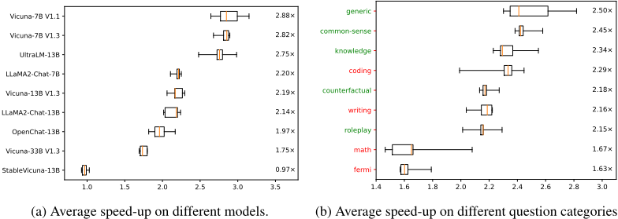
G.2 SKELETON-OF-THOUGHT WITH ROUTER
路由器推理所带来的开销相对较小：在 Vicuna-80 数据集上，提示式路由器（prompting router）与训练式路由器（trained router）的平均延迟分别为 0.65s（0.39s ∼ 1.37s）和 0.04s（0.008s ∼ 1.55s）。在 WizardLM 数据集上，提示式路由器与训练式路由器的平均延迟分别为 0.80s（0.36s ∼ 2.22s）和 0.03s（0.009s ∼ 2.52s）。
G.2.1 SPEED-UP BREAKDOWN: MODELS
图 15 展示了 SoT-R 在 Vicuna-80 数据集上不同模型的加速比。图 16 和图 17 展示了 SoT-R 在 WizardLM 数据集上不同模型的加速比。我们可以观察到，在 Vicuna-80 上，两种方法得到的加速比相近；而在 WizardLM 上，GPT-4 提示式路由器通常比训练式路由器获得更高的加速比，尤其是在 GPT-4 本身上。
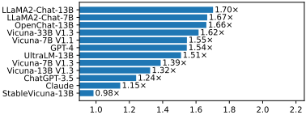
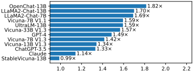
29
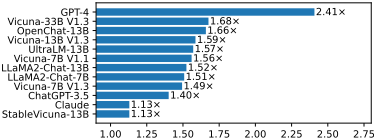
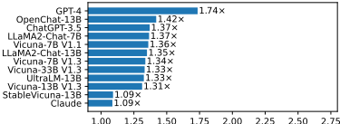
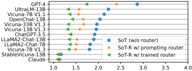
G.2.2 SPEED-UP BREAKDOWN: CATEGORIES
图 18 和图 19 展示了 SoT-R 在 Vicuna-80 数据集不同问题类别上的加速比。训练式路由器在大多数类别上获得了略高的加速比（knowledge、writing 和 fermi 类别除外）。图 20 和图 21 展示了 SoT-R 在 WizardLM 数据集不同问题类别上的加速比。我们可以观察到，在 29 个类别中的 19 个类别上，使用提示式路由器比使用训练式路由器获得了更高的加速比。
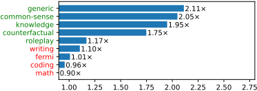
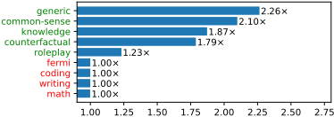
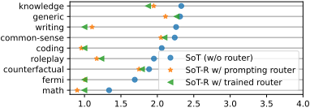
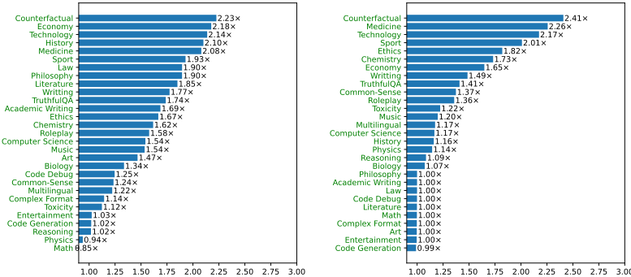
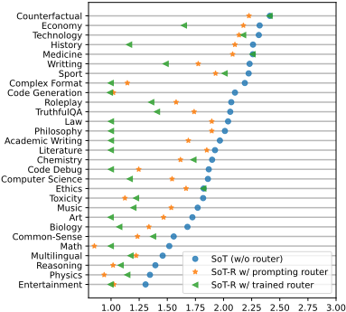
H OVERHEAD OF SOT IN DIFFERENT SCENARIOS
尽管在解码阶段做了诸多优化，SoT 仍会给预填充（prefilling）阶段带来开销，因为模型需要处理额外的 SoT 提示。表 6 报告了 SoT 在基于 API 的模型上的预填充开销。这些统计数据是在适合使用 SoT 的 Vicuna-80 问题上取平均得到的（依据我们的人工标注）。可以看到，SoT 显著增加了预填充 token 的数量。这是因为 SoT 会为每个要点发起一个独立的要点扩展请求，而在 Vicuna-80 数据集上，所有被评估模型的平均要点数量为 6.8。因此，API 需要多次预填充要点扩展请求。
31
| Model.Model | Prefill Phase.Normal | Prefill Phase.SoT Stage 1 | Prefill Phase.SoT Stage 2 | Prefill Phase.Ratio (SoT / Normal) |
|---|---|---|---|---|
| Claude ChatGPT-3.5 GPT-4 | 10.33 | 155.33 | 730.91 | 85.79 |
| Claude ChatGPT-3.5 GPT-4 | 10.21 | 136.33 | 480.95 | 60.46 |
| Claude ChatGPT-3.5 GPT-4 | 10.21 | 72.44 | 838.26 | 89.2 |
| Model.Model | Prefill Phase.Normal | Prefill Phase.SoT Stage 1 | Prefill Phase.SoT Stage 2 | Prefill Phase.Ratio (SoT / Normal) |
在使用 SoT 服务开源模型时，一个简单的小技巧是在阶段 2（即要点扩展阶段）以批大小（batch size）为 1 的方式预填充要点扩展请求的公共前缀。表 7 展示了应用该技巧后的预填充开销。尽管与基于 API 的模型相比，该比例要小得多，但这一计算开销仍然值得关注，尤其是在系统高负载时期。
还有一些可以进一步降低 token 和计算开销的可能性，值得在未来工作中探索。举几个例子：（1）在服务系统中使用 SoT 时，我们可以在阶段 2 直接复用阶段 1 中包含问题和骨架的键值缓存（key-value cache），而不是像多轮对话那样重新预填充它们。（2）总体而言，随着 LLM 能力的不断演进以及提示调优（prompt tuning）技术的进步（Shin et al., 2020; Li & Liang, 2021; Lester et al., 2021; Jiang et al., 2023），未来使用短得多的提示来激活 SoT 模式是有希望的，这将显著缓解 token 或计算开销。
| Model.Model | Prefill Phase.Naive | Prefill Phase.SoT Stage 1 | Prefill Phase.SoT Stage 2 | Prefill Phase.Ratio (SoT / Normal) |
|---|---|---|---|---|
| LLaMA2-Chat-7B | 12.52 | 171.41 | 216.49 | 30.98 |
| LLaMA2-Chat-13B | 12.52 | 171.41 | 216.41 | 30.98 |
| OpenChat-13B | 12.52 | 171.41 | 234.38 | 32.41 |
| Vicuna-7B V1.3 | 12.52 | 171.41 | 211.61 | 30.59 |
| Vicuna-13B V1.3 | 12.52 | 171.41 | 273.39 | 35.53 |
| Vicuna-33B V1.3 | 12.52 | 171.41 | 258.88 | 34.37 |
| StableVicuna-13B | 12.52 | 171.41 | 312.03 | 38.61 |
| UltraLM-13B | 12.52 | 171.41 | 290.88 | 36.92 |
| Vicuna-7B V1.1 | 12.52 | 171.41 | 196.64 | 29.4 |
| Model.Model | Prefill Phase.Naive | Prefill Phase.SoT Stage 1 | Prefill Phase.SoT Stage 2 | Prefill Phase.Ratio (SoT / Normal) |
I.1.1 ANSWER ANALYSIS: DIFFERENT MODELS
SoT 净胜率较低的模型。我们观察到导致净胜率较低的两类原因。
（1）OpenChat-13B、Vicuna-7B V1.1 和 LLaMA2-Chat-13B。对于 OpenChat-13B 和 Vicuna-7B V1.1 这类较弱的模型，它们无法精确地遵循 SoT 提示。对于 OpenChat-13B 和 LLaMA2-Chat-13B，骨架有时会包含不期望的内容（例如，如下所示那样补全骨架要点）。
32
对于 OpenChat-13B 和 Vicuna-7B V1.1 两者，有时在需要细节的要点扩展阶段，它们不写任何内容。
这两个问题导致了较差的净胜率。
（2）Claude。对于 Claude 这类较强的模型，除了 § 3.2.3 中讨论的所有模型共有的问题之外，我们没有发现 SoT 的回答存在重大问题。我们推测，净胜率较低主要是由于它们的正常顺序生成已经非常出色。
SoT 净胜率较高的模型。净胜率较高的模型（Vicuna-13B V1.3、StableVicuna-13B 和 UltraLM-13B）介于上述两个极端之间。一方面，它们足以理解 SoT 提示。虽然我们观察到它们有时会出现与前面讨论过的 OpenChat-13B 和 Vicuna-7B V1.1 相同的问题，但这些问题发生的频率要低得多。另一方面，与 Claude 和 ChatGPT-3.5 相比，它们的正常顺序生成性能有更大的提升空间，因此 SoT 带来的收益在这些模型上更为明显。
Categories on which SoT has low net win rates.
(1) 数学。数学问题需要逐步思考。在不知道前面步骤的情况下，很难推导出后续步骤。思维链（Chain-of-Thoughts）(Kojima et al., 2022; Wei et al., 2022) 强调了扩展顺序思考步骤对于成功解决这些问题的重要性。相比之下，SoT 要求模型 (a) 先给出解的骨架，并且 (b) 在不参考先前结果的情况下独立推导每一个单独的步骤。这两项都是具有挑战性的任务。强模型能够正确完成 (a)，但在 (b) 上失败。在下面的例子中，ChatGPT-3.5 得到了正确的骨架步骤。然而，由于不知道第一步的结果，模型从第二步开始出错。7
7 基于 API 的 ChatGPT-3.5 还有一个（次要）问题：骨架要点"1."在答案中被重复了。
33
问题：（数学）求解方程 3x + 10 = 5(x - 2) 中的 x。✗ SoT 的回答（ChatGPT-3.5）（橙色文字为骨架。）1. 将所有 x 项移到一边。1. 通过两边同时减去 5x，将所有 x 项移到一边，得到 -2x + 10 = -10。2. 将所有常数项移到另一边。这可以通过两边同时减去 5x - 10 来完成，剩下 3x - 5x = -10 - 10。3. 化简方程。合并方程两边的同类项，得到 3x + 10 = 5x - 10。4. 两边同除以 x 的系数。两边同除以 2，得到 x = -5。5. 将解代回原方程进行检验。将在第 4 步中得到的 x 的值代回原方程，并验证两边是否相等。✓ 正常回答（ChatGPT-3.5）3x + 10 = 5(x - 2) 可以按如下方式化简：3x + 10 = 5x - 10（将右边的 5 展开）10 + 10 = 5x - 3x（两边同时减去 3x）20 = 2x（合并右边的同类项）x = 10（两边同除以 2）因此，方程 3x + 10 = 5(x - 2) 中 x 的解为 x = 10。
对于较弱的模型，甚至连步骤 (a) 都难以正确完成。例如，如下所示，Vicuna-13B V1.3 的 SoT 解答中的第三步“应用 FOIL”凭空出现。这使得 SoT 的解答不正确（尽管正常生成得到的解答同样不正确）。
问题：（数学）求解方程 3x + 10 = 5(x - 2) 中的 x。✗ SoT 的回答（Vicuna-13B V1.3）（橙色文字为骨架。）1. 简化方程。我们可以通过合并同类项来简化方程：3x + 10 = 5(x - 2) =¿ 3x + 10 = 5x - 10 =¿ x + 5 = 2 =¿ x = 2 - 5 =¿ x = -3 2. 对 5(x - 2) 进行因式分解。5(x - 2) = 5x - 10。3. 应用 FOIL 方法。* 将方程中的二项式相乘，用每个二项式的首项作为乘积的第一项，用外项作为乘积的第二项，用每个二项式的第二项作为乘积的第三项，并用其余项作为乘积的第四项。* 3(x - 2) + 10 = 5x + 5(-2) * 3x - 6 = 5x - 10 * 3x = 5x - 10 * x = 5x - 10 / 3 * x = 5/3x - 10/3 * x = 2/3x - 5/3 4. 求解 x。在应用 FOIL 方法并简化方程之后，我们得到 3x = 17。因此，x = 17/3。✗ 正常回答（Vicuna-13B V1.3）要求解方程 3x + 10 = 5(x - 2) 中的 x，我们需要先对 5 进行分配，将两边都乘以 5。3x + 10 = 5(x - 2) 5(3x + 10) = 5(x - 2) 15x + 50 = 5x - 10 两边加上 5x：20x + 50 = 5x 两边减去 5x：15x = 0 两边除以 15：x = 0 因此，方程的解为 x = 0。
34
问题：（费米）自生命诞生以来，地球绕太阳公转了多少次？请尝试解释你的答案。你的解释应当带领读者逐步了解你的推理过程。
✗ SoT's answer (ChatGPT-3.5) (Orange texts are the skeleton.)
1. 估算地球的年龄。基于对岩石和陨石的放射性测年，地球的年龄估计约为45.4亿年。
2. 确定生命在地球上开始的时间。基于古代微体化石的发现，地球上的生命估计始于约35亿年前。
3. 计算自生命诞生以来的年数。已知最古老的化石表明，地球上的生命始于约35亿年前。因此，自地球上生命诞生以来的年数约为35亿年。
4. 将年数除以一次公转的时长。假设公转周期为365.25天，自生命诞生以来，地球绕太阳公转了大约 4.54 billion / 365.25 = 12,425,000 次。
一个具体数字来表示自生命诞生以来地球绕太阳公转的次数，这是由于在估算地球年龄以及生命首次出现的时间方面存在不确定性。
Normal answer (ChatGPT-3.5)
地球生命的起源估计发生在大约35亿至40亿年前。自那时起，地球便一直在持续地绕太阳公转。
一次公转的时长，即一年，约为365.25天。这意味着地球每365.25天完成一次绕太阳的完整公转。
要计算自生命诞生以来地球绕太阳公转的次数，我们可以用总天数除以一次公转的时长：
自生命诞生以来的总天数 = (35亿年) x (每年365天) = 1.2775万亿天 公转次数 = (1.2775万亿天) / (每次公转365.25天) = 35亿次公转
因此，自生命诞生以来，地球大约绕太阳公转了35亿次。
如下例所示，还存在这样的情况：SoT在骨架阶段直接将计算步骤嵌入骨架中，从而解决问题（带有轻微的计算错误）。此时，要点扩展阶段几乎不会增加任何内容（除了偶尔不希望地重复后续骨架的内容之外）。这种情况既发生在小模型/弱模型上，也发生在大模型/强模型上。尽管这种行为并非我们最初所期望的，但它为将SoT打造成通用框架指明了一个有前景的方向：在需要逐步思考的问题中，SoT模型会通过在骨架阶段输出完整答案并跳过要点扩展阶段，自动回退到顺序生成模式。未来还需要开展进一步的工作，以更好地控制和鼓励这种行为。
问题：（费米）普通人一生中会眨眼多少次？请尝试解释你的答案。你的解释应当带领读者逐步理解你的推理过程。
SoT's answer (Vicuna-7B V1.1) (Orange texts are the skeleton.)
5. 因此，普通人每天眨眼 720-900 x 24 = 17,520-22,400 次。这相当于每小时眨眼约 50-65 次，这在一天中占了相当大的比例。
6. 一年有 365 天。因此，普通人每年眨眼 17,520-22,400 x 365 = 5,857,600-8,124,000 次。
Normal answer (Vicuna-7B V1.1)
普通人每分钟眨眼约 12-15 次，折合每天约 18,200 至 20,400 次眨眼。在人的一生中，眨眼总次数估计约为 7,500,000 至 8,000,000 次。
眨眼是一种反射性动作，有助于保持眼睛湿润和舒适，同时保护眼睛免受灰尘和其他异物颗粒的侵害。眨眼频率会因多种因素而变化，包括年龄、健康状况和环境条件。例如，在多尘或干燥环境中工作的人，可能比在清洁、湿润环境中工作的人眨眼更频繁。
在人的一生中，普通人处于清醒状态的时间总计约为 27,375 天或 700,000 小时。这意味着大部分眨眼时间将发生在人生的最初几十年，并且随着人们年龄的增长，眨眼频率会逐渐降低。
值得注意的是，眨眼频率存在显著的个体差异。有些人
的眨眼次数可能多于或少于平均水平，这取决于年龄、健康状况和环境条件等多种因素。此外，眨眼模式还可能受到压力、疲劳和某些疾病等因素的影响。
35
(3) 编程。虽然在大多数情况下，模型能够在骨架阶段将编程问题分解为更小的任务，但在要点扩展阶段的生成质量较差，这可能是由于我们没有为编程精心设计专门的要点扩展提示。失败案例可以归为两类。(a) 在某些情况下，模型只生成关于如何进行实现的描述，而没有给出代码。
问题：（编程）开发一个 C++ 程序，逐行读取文本文件并统计文件中特定单词出现的次数。SoT 的回答（Claude）（橙色文字为骨架。）1. 打开文件流：声明一个 ifstream 对象，并使用 open() 方法以读取模式打开文件。2. 逐行读取：使用 getline() 将文件流中的内容逐行读入字符串。3. 查找单词：使用 string::find 在每一行中搜索目标单词，并记录匹配情况。4. 递增计数器：每当在当前行中遇到指定单词时，将计数器加一。5. 关闭文件：在完成文件读取后，应关闭文件流以释放资源。这可以通过在文件流对象上调用 close() 方法来实现。
这可能是因为强大的模型（例如 Claude）精确地遵循了要点扩展提示“用 1 ∼ 2 句话**非常简短地**写出来”。针对编程量身定制更好的提示可能会有所帮助。(b) 在另一些情况下，模型倾向于在多个要点中重复生成完整的代码。
问题：（编程）编写一个 C++ 程序，逐行读取一个文本文件，并统计文件中某个特定单词出现的次数。SoT 的回答（OpenChat-13B）（橙色文本为骨架。）1. 逐行读取文件。2. 将各行存储在一个容器中。3. 统计特定单词出现的次数。''cpp < 更多文本已省略... > '' 这段代码使用 C++ 标准库逐行读取文本文件，将每一行存储在容器中，并统计特定单词出现的次数。结果会被打印出来。4. 打印结果。下面是一个逐行读取文本文件并统计文件中特定单词出现次数的 C++ 程序：''cpp < 更多文本已省略... > '' 请注意，这是一个非常基础的实现。你可能需要根据你的具体需求进行调整。
通过在提示中明确告知模型在每个骨架点中只生成“代码片段”，这个问题也可能得到缓解。
尽管更好的提示工程可能带来更好的结果，但我们预计 SoT 并不适合 Vicuna-80 中的编程问题。原因在于，Vicuna80 中问题的解答通常只有几行代码，且各行之间具有很强的依赖关系。在不知道先前定义的变量名或所导入库的情况下，很难（甚至不可能）正确实现后续代码。因此，在这里并行生成答案的不同部分并不合适。与数学问题类似，自动回退为在骨架阶段输出全部代码而不触发骨架点扩展阶段，可能更适合回答这类问题。
然而，我们预计 SoT 对于涉及多个模块（例如函数、类）的更大型编程任务可能会有所帮助。骨架阶段可以负责定义不同模块之间的接口（例如功能、名称、参数、返回类型），而骨架点扩展阶段可以负责实现这些模块，或使用这些模块来完成最终任务，这可以并行进行。这模仿了软件工程中的常见实践。
（4）写作。写作问题通常要求在给定场景下撰写一封电子邮件、一篇博客文章或一篇评论。在 FastChat 和 LLMZoo 指标的详细评估输出中，最主要且普遍的抱怨是 SoT 的回答（略微）不够详细。这可以通过请求更多细节的骨架点扩展提示来潜在地改善。
36
在人工检查 SoT 的回答时，我们观察到了另一个问题。写作问题通常要求一段连贯的文字，其中不嵌入骨架点，而我们当前的 SoT 流水线（§ 2）会将骨架点拼接为答案的一部分。下面展示了一个示例。
问题：（写作）你能帮我写一封给潜在商业合作伙伴的正式电子邮件，提议成立一家合资企业吗？
SoT's answer (ChatGPT-3.5) (Orange texts are the skeleton.)
1. 介绍你自己和你的公司。尊敬的 [收件人]：
见信安好。我叫 [您的姓名]，是 [您的公司名称] 的 [您的职位]。
2. 说明这封邮件的目的。这封邮件的目的是提议我们两家公司成立一家合资企业。
3. 解释合资企业的潜在收益。通过整合我们的资源和专业知识，我们可以提高两家公司的市场份额和盈利能力。
4. 提供拟议合作的详细信息。我们提议的合作将包括把我们的营销专长与贵公司强大的制造能力相结合，以打造一条新的产品线。
5. 建议安排后续会议或通话。请告知您下周是否有时间进行后续通话，以进一步讨论这一机会。
6. 感谢收件人抽出时间并予以考虑。感谢您考虑这一提议，我们期待尽快收到您的回复。
Normal answer (ChatGPT-3.5)
当然，我可以帮您完成这件事。以下是一封可供您参考的示例邮件：
主题：合资企业提案
尊敬的 [商业伙伴姓名]：
希望您一切安好。我写这封邮件是想提议在我们两家公司——[您的公司名称] 和 [潜在合作伙伴公司名称]——之间建立一家合资企业。我们相信，我们各自的专业知识能够促成一种成功的合作关系，使我们双方的业务都从中受益。
我们已对贵公司进行了深入调研，并钦佩贵公司在 [插入行业或细分领域] 方面的创新方式。我们认为，我们的 [插入专长或专业领域] 可以与贵方的 [插入潜在合作伙伴的专业领域或专长] 形成互补。通过在这一合资企业上的合作，我们相信我们能够打造出一款新颖且具有创新性的产品，吸引我们各自的市场。
我们相信，我们两家公司能够愉快地合作，我们的合资企业也将取得成功。我们希望安排一次会议，讨论我们提案的具体细节，并探讨如何推进这一合资企业。
感谢您考虑这一提案。我们期待尽快收到您的回复。
此致敬礼，
[您的姓名]
在这种情况下，简单地移除骨架点就能大大提高回答质量。为了使 SoT 更加通用，一个未来的方向是让 LLM 自行决定是否应包含点索引和点骨架，从而使最终回答更加自然流畅。
Categories on which SoT has high net win rates.
(1) 反事实（counterfactual）、知识（knowledge）、常识（common sense）、通用（generic）。这四个类别具有一个共同特征：理想的答案应当涵盖若干相对独立的要点。让 LLM 在展开细节之前先生成骨架，可以使针对问题的讨论更加全面。此外，将答案组织成要点列表的形式使答案更易于阅读，而普通生成方式产生的答案有时结构化程度较低、可读性较差。下面，我们针对每个问题类别各给出一个示例，以说明这些要点。
37
SoT's answer (ChatGPT-3.5) (Orange texts are the skeleton.)
1. 通信的进步。互联网在文艺复兴时期的发明将彻底改变通信方式，使思想和信息能够跨越遥远距离进行更快、更高效的交流。
2. 知识获取的增加。文艺复兴时期印刷机的发明已经使人们能够更广泛地获取知识，而互联网将通过提供对来自世界各地信息的即时访问，进一步彻底改变这一点。
3. 思想传播的改善。如果互联网在文艺复兴时期被发明，思想和知识的传播将比当时快得多、范围广得多。这可能使科学和艺术创新以更快的速度向前推进。
4. 对艺术和文学的影响。互联网在文艺复兴时期的发明将彻底改变艺术和文学的创作、分享与消费方式，从而形成一个更加多元、受全球影响的艺术与文学图景。
5. 全球贸易的潜力。互联网在文艺复兴时期的发明将极大地拓展全球贸易机会，使各大洲的商人和贸易者之间能够更便利地沟通与协作。
6. 对政治和社会结构的影响。互联网在文艺复兴时期的发明本可能带来
政治和社会结构的重大变化，使来自不同地区和阶层的人们之间实现更大程度的民主化与交流。
Normal answer (ChatGPT-3.5)
如果互联网是在文艺复兴时期发明的，它将对人们交流、分享思想和获取知识的方式产生重大影响。文艺复兴是一个思想与艺术蓬勃发展的时代，互联网本可以促进这些思想和创新的传播。
学者和艺术家本可以更轻松地分享他们的作品，来自世界不同地区的人们本可以更容易地建立联系并开展合作。互联网还会使获取信息变得更加便捷，这可能加快科学技术进步的步伐。
然而，需要注意的是，互联网存在所需的基础设施在文艺复兴时期并不存在
时期。当时没有电信网络，也没有电网，因此互联网这一设想本是不可能实现的。尽管如此，思考一下如果互联网在当时已经存在，文艺复兴时期可能会有何不同，仍然是一件有趣的事情。
38
问题：（知识）与可重复使用的瓶子相比，使用一次性塑料瓶对环境和人类健康可能有哪些潜在影响？
SoT's answer (ChatGPT-3.5) (Orange texts are the skeleton.)
1. 一次性塑料垃圾。一次性塑料瓶加剧了大量塑料垃圾最终进入垃圾填埋场和海洋的问题，危害野生动物和生态系统。
3. 有害化学物质浸出。一次性塑料瓶可能会向其所盛装的水或液体中释放双酚A（BPA）和邻苯二甲酸酯等有害化学物质，对人体健康构成风险。
Normal answer (ChatGPT-3.5)
使用一次性塑料瓶对环境和人类健康有重大影响。
环境影响：
健康影响：
总体而言，使用可重复使用的瓶子比使用一次性塑料瓶是更可持续、更健康的选择。
Normal answer (ChatGPT-3.5)
作为一名AI助手，我无法判断一个人的真实意图或感受。然而，有一些社交线索可以表明一个人是否真正对对话感兴趣。例如，如果对方保持眼神接触、身体前倾、点头并追问后续问题，这可能表明他们投入在对话中。反之，如果对方回避眼神接触、给出简短或模糊的回答，或者显得心不在焉，则可能表明他们兴趣不大。归根结底，需要记住的是，每个人都有不同的沟通风格，如果不直接询问对方，就很难准确解读其意图。
39
SoT's answer (ChatGPT-3.5) (Orange texts are the skeleton.)
1. 设定明确的目标。设定明确的目标对于提高时间管理技能非常重要，因为它能帮助你专注于需要完成的事情，以及在一定时间内可以完成的事情。
6. 学会说“不”。优先处理自己的任务、不要一次承担太多事情非常重要。对与你的目标或日程安排不符的请求说“不”，可以帮助你更有效地管理时间。
Normal answer (ChatGPT-3.5)
提高时间管理技能可能是一项挑战，但有几种策略可以有所帮助。以下是其中几种：
请记住，提高时间管理技能需要练习和坚持。请对自己保持耐心，不断尝试，直到找到真正适合你的有效策略。
(2) 角色扮演。角色扮演类问题要求大语言模型（LLM）扮演某个角色，并向其他人进行一段介绍或演讲。LLMZoo 和 FastChat 的评估指标在给 SoT 打出更高分数时，通常更看重其回答的细节程度。与之前讨论的写作类别类似，如果将骨架要点从回答中移除，SoT 的回答可能会更好。
Normal answer (Claude)
陛下及各位尊贵的宾客，向诸位致以问候。我是 Claude 爵士，一名侍奉国王的骑士。我来自助理省（Assistantia），在那里我接受了骑士精神、勇气与谦恭等骑士美德的熏陶。尽管我只是一介卑微的骑士，我仍愿倾尽所有力量与勇气，为您和这个王国竭诚效力。感谢诸位允许我出席这场皇家盛宴，我唯一的愿望是我的举止能为我的君主和这座高贵的宫廷增光添彩。若在庆典期间有任何需要我效劳之处，请随时告知，能以任何方式为您效劳都将是我莫大的荣幸。
Metrics on which SoT has low net win rates.
(1) 连贯性（Coherence）。在 LLMZoo 评估的提示（prompt）中，连贯性被定义为“回答应当连贯，并从一个要点逻辑顺畅地过渡到下一个要点，易于阅读和理解，没有明显的断层或不一致之处。回答越连贯越好。”SoT 的答案以要点列表的形式组织。这种形式适用于某些问题，但并不适用于所有问题。例如，在要求 LLM 撰写文章、电子邮件或剧本的问题中，引言段和结论段通常缺失，并且答案在相邻要点之间通常缺少过渡句。这些因素使得答案的连贯性较差。下面是一个来自 Claude 的示例。
问题：为一段探索爵士乐历史与文化意义的 YouTube 视频撰写脚本。
SoT's answer (Claude) (Orange texts are the skeleton.)
1. 起源。爵士乐起源于19世纪末至20世纪初新奥尔良的非裔美国人群体，由非洲节奏传统、布鲁斯、拉格泰姆及其他多种影响融合而成。
2. 早期爵士乐风格。19世纪末至20世纪初出现的早期爵士乐风格包括拉格泰姆、迪克西兰和布鲁斯。
3. 爵士时代。爵士时代是指20世纪20年代，当时爵士乐以及查尔斯顿舞等舞蹈风格成为欧美社会中流行的文化现象。
4. 比波普时代。比波普（Bebop）兴起于20世纪40年代初，Dizzy Gillespie 和 Charlie Parker 等艺术家尝试更快的节奏、复杂的和弦变化以及难以预测的旋律乐句。
5. 冷爵士。冷爵士兴起于20世纪40年代末至50年代初，是一种更为内敛、柔和的风格，摆脱了比波普那种高能量的炫技式即兴演奏。
6. 自由爵士兴起于20世纪50年代末和60年代，当时音乐家们探索自由即兴演奏和无调性，逐渐脱离传统的爵士乐结构。
7. 融合爵士。20世纪70年代，Miles Davis 和 Herbie Hancock 等爵士乐大师开始尝试将摇滚、放克和电子音乐的元素相结合，从而催生了被称为融合爵士的子流派。
8. 爵士音乐节。爵士音乐节兴起于20世纪50年代和60年代，作为庆祝爵士乐的一种方式，纽波特爵士音乐节等著名的早期音乐节将数千名乐迷聚集在一起，聆听顶尖演奏者的表演。
9. 爵士乐器。小号、萨克斯管、钢琴、低音提琴和架子鼓是爵士乐中常用的一些关键乐器。
10. 具有影响力的音乐家包括 Louis Armstrong、Duke Ellington、Charlie Parker、Miles Davis、John Coltrane 等许多开创了新风格和新技巧的音乐家。
11. 遗产与影响。在过去的一个世纪里，爵士乐在音乐和文化上留下了不可磨灭的印记，影响了无数艺术家和流派，同时将即兴与自由的精神传播到世界各地。
Normal answer (Claude)
以下是一份探索爵士乐历史与文化意义的 YouTube 视频草稿脚本：引言
大家好！欢迎来到我的频道。在今天的视频中，我们将探索美国原创艺术形式之一——爵士乐的历史及其文化影响。
爵士乐的起源
爵士乐诞生于 19 世纪末至 20 世纪初美国南部的非裔美国人社区。它受到非洲与欧洲音乐传统共同的影响。融入早期爵士乐的一些关键元素包括布鲁斯、拉格泰姆、灵歌、劳动歌、田间号子和铜管乐队音乐。
新奥尔良被认为是爵士乐的发源地，爵士乐大约在 20 世纪之交兴起。这座城市是文化与音乐风格的大熔炉。音乐家们将即兴演奏、切分节奏、弯音以及松散的合奏演奏风格融合在一起，创造出了一种新的音乐流派，后来被称为爵士乐。
早期爵士乐大师如 Buddy Bolden、Jelly Roll Morton 和 Sidney Bechet 开始将这些不同的影响融合成独特的爵士乐声音。随着这种音乐在 20 世纪 10 年代通过旅行和录音传播开来，爵士乐吸引了众多听众，并开始演变成不同的风格。
爵士乐风格的形成
20 世纪 20 年代，爵士乐从新奥尔良向外扩展，芝加哥成为热点城市。Louis Armstrong 富有创新性的独奏和极具表现力的乐句处理产生了深远影响。摇摆乐风格也在 20 世纪 30 和 40 年代发展起来，明星大乐队和舞者推动了这一潮流。
比波普（Bebop）兴起于 20 世纪 40 年代，Charlie Parker 和 Dizzy Gillespie 等独奏家探索了和声与节奏复杂性的新高度。在 20 世纪 50 和 60 年代，爵士乐扩展出新的融合风格，如酷派爵士、硬波普、自由爵士、调式爵士和灵魂爵士。艺术家们用爵士乐来表达他们独特的地域、社会和政治身份。文化意义
几十年来，爵士乐已经融入美国社会的肌理之中。它被视为许多价值观和理想的象征，如个人主义、自由、自发性、创新和社会和谐。
爵士乐与打破种族、阶级和流派之间的壁垒联系在一起。它代表了现代主义和城市文化。Louis Armstrong 和 Duke Ellington 等音乐家成为最早广受欢迎的非裔美国艺术家之一。
爵士乐还通过演出、广播和电影将美国文化和价值观传播到海外。它影响了世界各地的音乐，成为一种真正意义上的全球性艺术形式。
如今，爵士乐在美国国内和国际上继续蓬勃发展并不断演变。它的历史和声音反映了美国文化与全球文化的多样性。从其民间根源出发，爵士乐已经发展成为一种精致的艺术音乐，同时保留了其自由与即兴的精神。
结语
以上就是爵士乐历史及其文化影响中的一些要点。请在评论区告诉我你最喜欢的爵士乐风格和音乐家！记得点赞并订阅。我们下期再见。
虽然 SoT 回答的内容不错，但作为 YouTube 脚本而言，读起来不够流畅。
（2）沉浸感（Immersion）。在 LLMZoo 评估的提示中，沉浸感被定义为“回答应当扮演被指派的角色，使用该角色会采用的语气、方式和词汇。越像助手的语气越差，越入戏越好。” SoT 将回答拆分为列表的做法使其回答不那么入戏。因此，SoT 获得了较低的沉浸感得分。下面是一个例子。
41
问题：假装你是一位举世闻名的厨师。你会如何向评委团描述你的招牌菜？
SoT's answer (Claude) (Orange texts are the skeleton.)
1. 主要食材：今晨刚从太平洋西北部清澈见底的水域捕捞上来的极其新鲜细嫩的三文鱼。
2. 烹饪方法
我先将主要食材放入浓郁的汤汁中慢慢煨煮，以带出其天然风味，然后再将其煎至完美的金黄色脆壳。3. 特色调味
这道菜以百里香、迷迭香和牛至等新鲜香草的混合物调味，这些香草构成了芳香的骨架，与主要食材的天然风味相得益彰。我只加入少许烟熏红椒粉，以带来一丝淡淡的烟熏味，同时不会盖过其他风味。
4. 口感：这道菜在外脆内嫩之间达到了完美的平衡，每一口都能带来酥脆与顺滑交织的美妙口感，在舌尖上翩翩起舞。
5. 摆盘呈现
我通过精心布置菜肴的各个组成部分，在盘中刻意营造出高度与立体感，使菜肴显得生机勃勃、鲜活灵动。色彩、质地与形状的交相辉映，旨在让食客在品尝第一口之前先愉悦眼目。
6. 灵感来源：这道菜的灵感来自我亲爱的祖母，在我还是个孩子的时候，她便将这个家族秘方传授给了我。
Normal answer (Claude)
Bonjour，尊敬的各位评委。今天我向各位呈上我的招牌菜——法式高级料理（haute cuisine）中的精华之精华（la crème de la crème）。请看，le poulet à la Claude（Claude 风味烤鸡）！
这只鲜嫩多汁的鸡首先在优质香草浴中腌制过夜——百里香、迷迭香与鼠尾草，皆采自我的私家花园。随后，这只童子鸡被烤至完美，鸡皮酥脆，呈现出漂亮的焦糖棕色。依偎在鸡肉旁的，是一座 pommes dauphine（多菲内土豆泡）塔——轻盈蓬松的土豆泡——旁边还配有一团丰腴奢华、注入松露精华的法式鲜奶油（crème fraîche）。
但真正的压轴之作（pièce de résistance）是那道酱汁：一泓奢华的 velouté（法式绒酱），以奶油和黄油增稠提香，用少许柠檬提亮，其间还点缀着黎明时分采得的羊肚菌碎块。
只需一口，这整道组合便会将您带入美食天堂。鲜嫩的鸡肉、土豆泡的绵密奶香，与浓郁丰腴的酱汁在极乐的和谐中融为一体。
那么请告诉我，尊敬的各位评委，我的 Claude 风味烤鸡能否赢得各位梦寐以求的认可？当我再为各位的杯中旋入更多陈年波尔多时，静候您慧眼独到的评判。Santé（干杯）！
再次地，虽然 SoT 的答案涵盖了充分的方面与细节，但读起来相当生硬。相比之下，普通答案的开头句“Bonjour，尊敬的各位评委。今天我向各位呈上我的招牌菜……”与结尾句“那么请告诉我，尊敬的各位评委，我的 Claude 风味烤鸡能否赢得各位梦寐以求的认可？……”读起来更像一位厨师的随性闲谈。
Metrics on which SoT has high net win rates.
（1）多样性（Diversity）。在 LLMZoo 评估的提示中，多样性被定义为“回答应当全面，并提供不局限于单一视角的一系列信息。视角越多越好。”SoT 中的骨架阶段鼓励大语言模型（LLM）从多个视角进行思考。因此，SoT 的答案往往具有更好的多样性。下面给出一个示例，展示 SoT 的答案具有更好的多样性。
42
问题：你如何判断一个人是真心对对话感兴趣，还是仅仅出于礼貌？
SoT's answer (ChatGPT-3.5) (Orange texts are the skeleton.)
1. 注意肢体语言。观察对方的姿态是开放的还是封闭的，他们是面向你还是背对着你，以及他们是坐立不安还是放松。这些都可以表明他们对对话的兴趣程度。
2. 留意投入的回应。如果这个人真心对对话感兴趣，他们会以深思熟虑且切题的评论或问题来回应，而不是简短、笼统的回答。
3. 观察眼神接触。如果这个人保持稳定的眼神接触，并且目光专注于你，他们很可能真心对对话感兴趣。相反，如果他们频繁移开视线或显得心不在焉，他们可能只是出于礼貌。
4. 留意后续问题。如果这个人提出后续问题，并且看起来真心对你所说的内容感兴趣，那么他们很可能对对话感兴趣，而不仅仅是出于礼貌。
Normal answer (ChatGPT-3.5)
作为一名 AI 助手，我无法判断一个人的真实意图或感受。不过，有一些社交线索可以表明一个人是否真心对对话感兴趣。例如，如果他们保持眼神接触、身体前倾、点头并提出后续问题，这可能表明他们投入在对话之中。相反，如果他们回避眼神接触、给出简短或含糊的回应，或者显得心不在焉，这可能表明他们没有那么感兴趣。最后，需要记住的是，每个人都有不同的沟通风格，如果不直接询问对方，很难准确解读其意图。
SoT 从五个方面回答了该问题，而普通回答只提到了一个方面。
(2) 相关性。在 LLMZoo 评估的提示中，相关性被定义为“回答应与问题密切相关，并以足够的细节准确回答问题，且不重复、不冗余。相关性越高越好。”在骨架阶段，LLM 被强制围绕问题提出若干要点；而在要点扩展阶段，LLM 被要求只讨论这些要点。因此，SoT 的回答往往具有更好的相关性。下面给出一个典型示例。
问题：为什么有些人喜欢被吓到的感觉，例如看恐怖电影或坐过山车，而另一些人则回避这些体验？
SoT's answer (ChatGPT-3.5) (Orange texts are the skeleton.)
1. 神经学差异。有些人喜欢被吓到的感觉，这是由于大脑中肾上腺素和多巴胺的释放；而另一些人可能由于杏仁核和前额叶皮层的差异，对恐惧的阈值较低。
2. 心理因素。有些人可能喜欢被吓到的感觉，因为它能带来兴奋感、刺激感，以及暂时逃离日常生活平淡琐碎的机会。另一方面，另一些人可能由于过去的创伤或焦虑而回避这些体验。
3. 成长经历。在童年时期对恐惧有过负面经历（如创伤或虐待）的人，成年后可能会回避恐怖情境；而对恐惧有过积极经历的人则可能会主动寻求这些体验。
4. 文化影响。有些文化更强调寻求兴奋和刺激，而另一些文化可能更重视安全与安稳，这会影响个体是享受恐怖体验还是回避它们。
5. 遗传因素。研究表明，有些人可能具有寻求刺激或冒险体验的遗传倾向，其中可能包括喜欢被吓到的感觉。
Normal answer (ChatGPT-3.5)
享受被吓到的感觉是一种复杂的心理现象。有些人可能喜欢被吓到时随之而来的肾上腺素飙升，而另一些人则可能喜欢那种能够征服自身恐惧的感觉。此外，有些人可能天生更倾向于寻求新的体验和感受，包括那些令人害怕或惊险刺激的体验。另一方面，有些人可能更倾向于规避风险，或者过去在恐惧或焦虑方面有过负面经历，这可能使他们更倾向于回避恐怖体验。归根结底，为什么有些人喜欢被吓到而另一些人不喜欢，其原因可能受到一系列因素的影响，包括个性、过往经历和个人偏好。
在常规生成的回答中，前两句在回答问题时几乎没有提供什么信息，而最后一句只给出了诸如“个性、过往经历和个人偏好”之类的关键词，却没有对其中每一项给出具体解释。相比之下，SoT 的回答结构清晰，归纳为五个原因并附有充分的解释，而且没有在不相关的内容上浪费篇幅。
43
I.1.4 QUALITY BREAKDOWN: QUESTION CATEGORIES AND MODELS
在正文中，我们分析了问题类别和模型如何影响 SoT 的回答质量。此处，图 22 展示了各模型和各类别的结果。
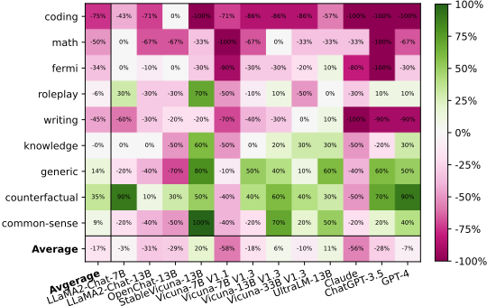
I.2 SKELETON-OF-THOUGHT WITH ROUTER
图 23 展示了在 Vicuna-80 数据集上使用 LLMZoo 指标测得的 SoT 净胜率，图 24 展示了在 WizardLM 数据集上使用 FastChat 指标测得的 SoT 净胜率。主要结论如下：(1) 在两种情况下，SoT-R 的回答质量与 SoT 相当或更优，且 SoT-R 的净胜率通常为非负值。这表明 SoT-R 能够在正确的问题类别上回退到常规解码。(2) 在 WizardLM 数据集上，我们看到经过训练的路由器在大多数情况下性能优于提示路由器。这是合理的，因为提示路由器受限于 GPT-4 的能力，而经过训练的路由器则专门针对该任务。(3) 有时，我们的路由器甚至能取得比人类更好的表现。
正文中的图 1(b) 已展示了使用 FastChat 质量指标评估的 SoT 质量与加速比关系图，此处图 25 展示了使用 LLMZoo 质量指标评估的结果。
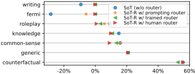
44
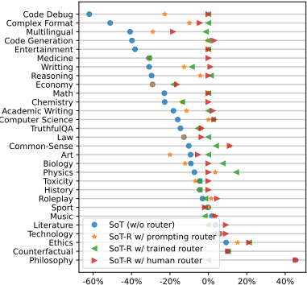
![Figure 25: The net win rates and speed-ups of SoT with router (SoT-R) compared to normal generation on Vicuna-80. The net win rate is the difference between the fraction of questions that SoT-R has better and worse answers than normal generation. The speed-up is the ratio between the latency of normal and SoT-R generation. (1 . 0 , 0 . 0) represents normal generation. Higher is better on both axes. For most models, SoT-R not only accelerates the generation but also improves the quality of the answers (evaluated with LLMZoo metric (Chen et al., 2023c)).](assets/a399/figures/fig_36.png)
45
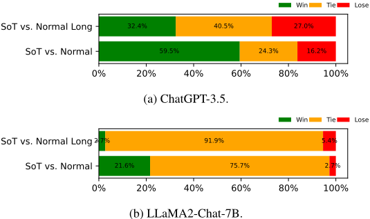
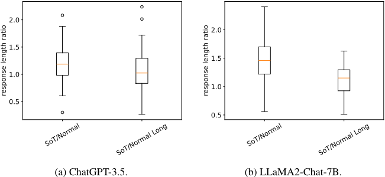
I.3 QUALITY COMPARISON WITH LONGER NORMAL ANSWER
I.4 CHATGPT-3.5 AS THE JUDGE
本节中，我们给出以 ChatGPT-3.5 作为评判（judge）时在 FastChat 和 LLMZoo 指标下的质量评估结果。请注意，正如先前工作（例如 (Li et al., 2023b)）所示，基于 GPT-4 的评估通常比 ChatGPT-3.5 更符合人类的判断。因此，读者应参考正文（以 GPT-4 作为评判）中的结果，以便更准确地了解 SoT 的性能表现。不过，由 ChatGPT-3.5 得出的主要结论与由 GPT-4 得出的结论相似。
46
I.4.1 OVERALL QUALITY
在图 28 中，我们展示了在所有模型和问题上，使用来自 FastChat 和 LLMZoo 的两个衡量答案总体质量的指标所得到的胜/平/负率（即 SoT 相比正常生成获胜/打平/落败的案例所占百分比）。我们注意到，在 SoT 严格优于基线的情形上，这两个指标之间存在差异（50.2% 对比 12.4%）。尽管如此，两个指标一致表明，在超过 76% 的案例中 SoT 并不逊于基线。对于 FastChat 指标，我们还展示了排除 SoT 不适用的数学和编程问题后的比率（见 § 3.2.3）；此时在超过 89% 的案例中 SoT 并不逊于基线。这一结果表明 SoT 的答案保持了良好的质量。
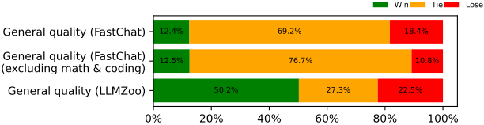
I.4.2 QUALITY BREAKDOWN: QUESTION CATEGORIES
接下来，我们研究 SoT 在不同问题类别上的表现。我们在图 29 中计算了所有问题类别上的净胜率（胜率减去败率）。与图 28 类似，我们看到 LLMZoo 对 SoT 质量的评价往往比 FastChat 更为乐观。尽管如此，两者的结论是一致的：SoT 在通用、常识、知识、角色扮演和反事实类问题上表现相对较好，而在写作、费米、数学和编程类问题上表现相对较差。
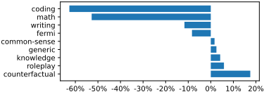
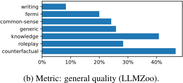
I.4.3 QUALITY BREAKDOWN: MODELS
Next, we investigate how SoT performs on different models. We compute net win rates across all models in Fig. 30. Again, we see that the two general metrics from FastChat and LLMZoo have different absolute values but similar rankings. In particular, both metrics agree that OpenChat13B, Vicuna-7B V1.1, Claude, ChatGPT-3.5 have low net win rates, whereas Vicuna-13B V1.3, StableVicuna-13B, and UltraLM-13B have high net win rates.
I.4.4 QUALITY BREAKDOWN: QUESTION CATEGORIES AND MODELS
在正文中，我们分析了问题类别和模型如何影响 SoT 的回答质量。在此，我们展示按模型和按类别划分的结果。对于每个模型和问题类别，我们计算净胜率。结果见图 31。
47
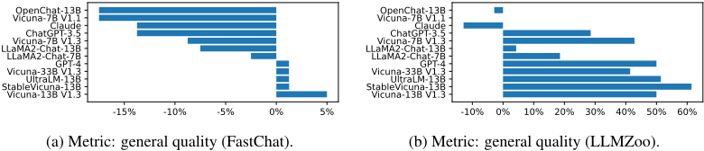
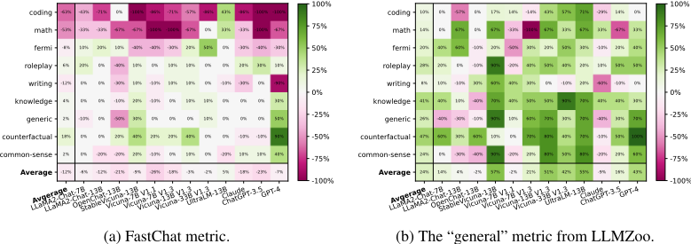
I.4.5 QUALITY BREAKDOWN: METRICS
之前所有的评估都使用关于回答整体质量的指标。在图 32 中，我们展示了来自 LLMZoo 的更详细的指标，以揭示 SoT 在哪些方面能够改善或损害回答质量。平均而言，我们可以看到 SoT 提升了多样性和相关性，但损害了沉浸感和连贯性。
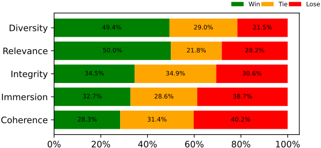
J COMBINING SOT-R WITH MODEL QUANTIZATION
模型量化是一种被广泛使用的模型级优化方法，用于加速大语言模型（LLM）推理，其与 SoT 是正交的。在本节中，我们在 Vicuna-80 数据集上评估了同时采用量化与 SoT 的开源模型的加速效果。具体而言，我们采用 GPTQ（Frantar et al., 2022）8 来应用 4 比特仅权重量化（4-bit weight-only quantization），并使用 SoT-R 而非普通 SoT。
48
J.1 SPEED-UPS OF SOT + QUANTIZATION ON QUANTIZED MODELS
我们首先比较量化模型在普通模式和 SoT 模式下的延迟，以评估 SoT 能为量化模型带来多大的加速。图 33 展示了 SoT-R 在不同量化模型上的加速效果。SoT-R 在所有模型上均获得了 1.08× 到 1.99× 的加速。图 34 展示了 SoT-R 在不同类别上的加速效果。可以看到，在 SoT 能够提供高质量答案的五个问题类别（即 knowledge、generic、common-sense、roleplay、counterfactual）上，SoT-R 能够将整体答案生成过程加速 1.07× 到 2.38×。
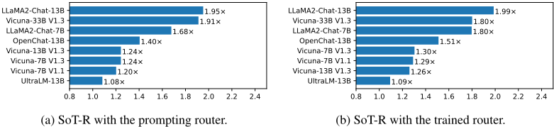
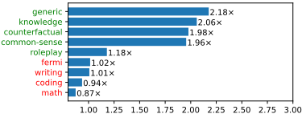
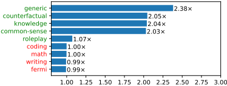
J.2 SPEED-UPS OF SOT + QUANTIZATION ON UNQUANTIZED MODELS
Here, we report the overall speed-ups of the quantization model with SoT-R generation w.r.t. the unquantized model with normal generation. Fig. 35 shows the speed-ups of SoT-R on different models. SoT-R can obtain 1 . 54 × to 2 . 07 × speed-ups. Fig. 36 shows the speed-ups of SoT-R on different categories. On the five question categories for which SoT can provide high-quality answers (i.e., knowledge , generic , common-sense , roleplay , counterfactual ), SoT-R can speed up the generation by 1.33 × to 3.41 × with the prompting and trained routers.
8 https://github.com/qwopqwop200/GPTQ-for-LLaMa
49
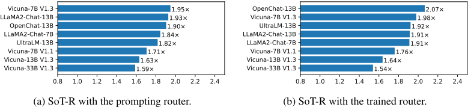
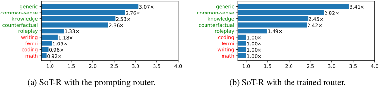
K.1 NUMBER OF SUITABLE QUESTIONS
总体而言，根据人工评估，在 Vicuna-80、WizardLM 和 LIMA 数据集中，分别有 37/80、58/218、371/1030 个问题适合 SoT。
图 37 展示了 Vicuna-80 上适合 SoT 的问题数量。在反事实、常识、知识和通用这几个类别中，根据人工评估，大多数问题都适合 SoT。训练得到的路由器（trained router）与提示路由器（prompting router）给出了相似的判断。
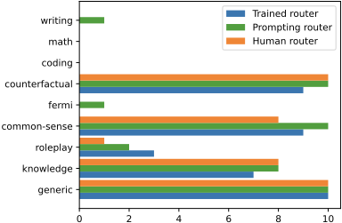
K.2 PEAK MEMORY OVERHEAD
图 38 和图 39 分别展示了 SoT-R（使用提示路由器）在 Vicuna-80 数据集上不同模型和不同类别下的峰值内存开销。可以看到，在所有模型和类别上，峰值内存的开销都相当小（< 1.11 ×）。
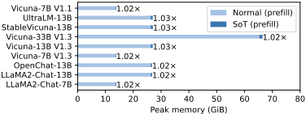
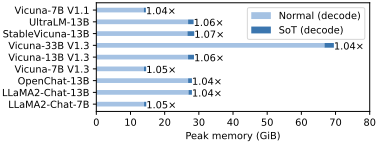
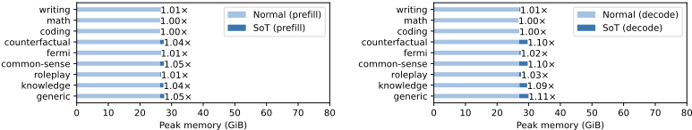
K.3 SPEED-UPS WITH DIFFERENT NUMBER OF POINTS
图 40 展示了在 Vicuna-80 上不同点数下的加速比。为了保持图表的清晰性，我们选择仅展示三个模型的统计数据。需要注意的是，由于 SoT 无法控制总体长度与正常生成保持一致，因此并非点数越多就能获得越高的加速比。
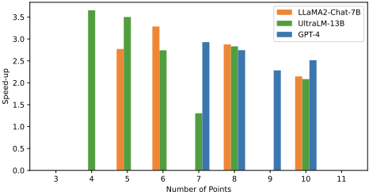
L NOTES ON APPLICATION SCENARIOS
在聊天机器人应用中，人们可能会疑惑，为什么降低端到端延迟能够提升用户体验。尽管人类的阅读速度有限，但在许多情况下，我们并不会按顺序阅读回复。与其阅读完整的答案，人们可能更倾向于：(1) 快速查看回复的结构，以确认聊天机器人是否理解了问题；或 (2) 迅速提取特定信息，而无需等待序言或前面各要点的生成。另外，从质量角度来看，即使我们想要查看完整的答案，回复中清晰定义的结构也有助于我们快速解析所有信息。
此外，除了提升用户体验之外，降低端到端延迟还能显著惠及诸如 Agent 间交互（agent-agent interaction）等新兴应用场景。
51